- After studying this chapter, you will be able to:
- Compare and contrast the anatomical structure of arteries, arterioles, capillaries, venules, and veins
- Accurately describe the forces that account for capillary exchange
- List the major factors affecting blood flow, blood pressure, and resistance
- Describe how blood flow, blood pressure, and resistance interrelate
- Discuss how the neural and endocrine mechanisms maintain homeostasis within the blood vessels
- Describe the interaction of the cardiovascular system with other body systems
- Label the major blood vessels of the pulmonary and systemic circulations
- Identify and describe the hepatic portal system
- Describe the development of blood vessels and fetal circulation
- Compare fetal circulation to that of an individual after birth
- Compare and contrast the three tunics that make up the walls of most blood vessels
- Distinguish between elastic arteries, muscular arteries, and arterioles on the basis of structure, location, and function
- Describe the basic structure of a capillary bed, from the supplying metarteriole to the venule into which it drains
- Explain the structure and function of venous valves in the large veins of the extremities
Blood is carried through the body via blood vessels. An artery is a blood vessel that carries blood away from the heart, where it branches into ever-smaller vessels. Eventually, the smallest arteries, vessels called arterioles, further branch into tiny capillaries, where nutrients and wastes are exchanged, and then combine with other vessels that exit capillaries to form venules, small blood vessels that carry blood to a vein, a larger blood vessel that returns blood to the heart.
Arteries and veins transport blood in two distinct circuits: the systemic circuit and the pulmonary circuit (Figure Figure \(\PageIndex{1}\)). Systemic arteries provide blood rich in oxygen to the body’s tissues. The blood returned to the heart through systemic veins has less oxygen, since much of the oxygen carried by the arteries has been delivered to the cells. In contrast, in the pulmonary circuit, arteries carry blood low in oxygen exclusively to the lungs for gas exchange. Pulmonary veins then return freshly oxygenated blood from the lungs to the heart to be pumped back out into systemic circulation. Although arteries and veins differ structurally and functionally, they share certain features.
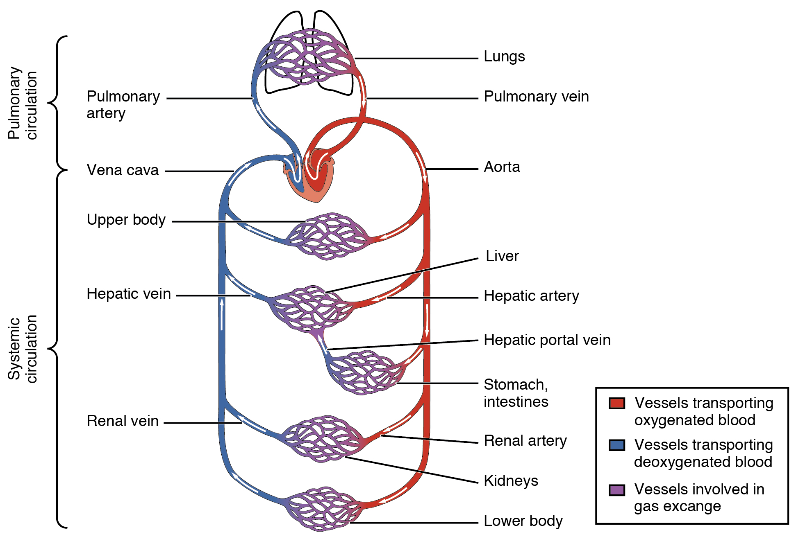
Different types of blood vessels vary slightly in their structures, but they share the same general features. Arteries and arterioles have thicker walls than veins and venules because they are closer to the heart and receive blood that is surging at a far greater pressure (Figure \(\PageIndex{2}\)). Each type of vessel has alumen—a hollow passageway through which blood flows. Arteries have smaller lumens than veins, a characteristic that helps to maintain the pressure of blood moving through the system. Together, their thicker walls and smaller diameters give arterial lumens a more rounded appearance in cross section than the lumens of veins.
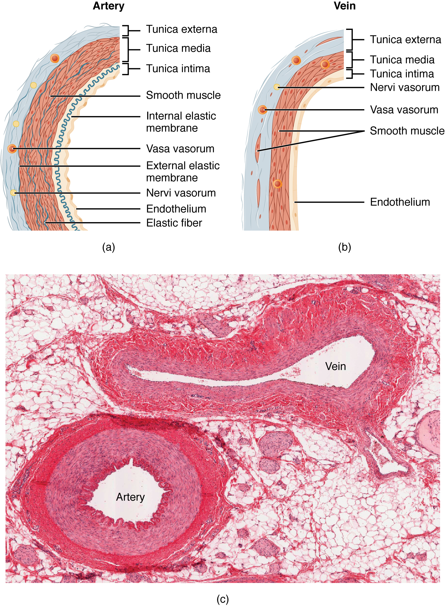
By the time blood has passed through capillaries and entered venules, the pressure initially exerted upon it by heart contractions has diminished. In other words, in comparison to arteries, venules and veins withstand a much lower pressure from the blood that flows through them. Their walls are considerably thinner and their lumens are correspondingly larger in diameter, allowing more blood to flow with less vessel resistance. In addition, many veins of the body, particularly those of the limbs, contain valves that assist the unidirectional flow of blood toward the heart. This is critical because blood flow becomes sluggish in the extremities, as a result of the lower pressure and the effects of gravity.
The walls of arteries and veins are largely composed of living cells and their products (including collagenous and elastic fibers); the cells require nourishment and produce waste. Since blood passes through the larger vessels relatively quickly, there is limited opportunity for blood in the lumen of the vessel to provide nourishment to or remove waste from the vessel’s cells. Further, the walls of the larger vessels are too thick for nutrients to diffuse through to all of the cells. Larger arteries and veins contain small blood vessels within their walls known as thevasa vasorum—literally “vessels of the vessel”—to provide them with this critical exchange. Since the pressure within arteries is relatively high, the vasa vasorum must function in the outer layers of the vessel (see Figure 20.3) or the pressure exerted by the blood passing through the vessel would collapse it, preventing any exchange from occurring. The lower pressure within veins allows the vasa vasorum to be located closer to the lumen. The restriction of the vasa vasorum to the outer layers of arteries is thought to be one reason that arterial diseases are more common than venous diseases, since its location makes it more difficult to nourish the cells of the arteries and remove waste products. There are also minute nerves within the walls of both types of vessels that control the contraction and dilation of smooth muscle. These minute nerves are known as the nervi vasorum.
Both arteries and veins have the same three distinct tissue layers, called tunics (from the Latin term tunica), for the garments first worn by ancient Romans; the term tunic is also used for some modern garments. From the most interior layer to the outer, these tunics are the tunica intima, the tunica media, and the tunica externa (see Figure \(\PageIndex{2}\)). Table \(\PageIndex{1}\) compares and contrasts the tunics of the arteries and veins.
| Arteries | Veins | |
|---|---|---|
| General appearance | Thick walls with small lumensGenerally appear rounded | Thin walls with large lumensGenerally appear flattened |
| Tunica intima | Endothelium usually appears wavy due to constriction of smooth muscleInternal elastic membrane present in larger vessels | Endothelium appears smoothInternal elastic membrane absent |
| Tunica media | Normally the thickest layer in arteriesSmooth muscle cells and elastic fibers predominate (the proportions of these vary with distance from the heart)External elastic membrane present in larger vessels | Normally thinner than the tunica externaSmooth muscle cells and collagenous fibers predominateNervi vasorum and vasa vasorum presentExternal elastic membrane absent |
| Tunica externa | Normally thinner than the tunica media in all but the largest arteriesCollagenous and elastic fibersNervi vasorum and vasa vasorum present | Normally the thickest layer in veinsCollagenous and smooth fibers predominateSome smooth muscle fibersNervi vasorum and vasa vasorum present |
Thetunica intima(also called the tunica interna) is composed of epithelial and connective tissue layers. Lining the tunica intima is the specialized simple squamous epithelium called the endothelium, which is continuous throughout the entire vascular system, including the lining of the chambers of the heart. Damage to this endothelial lining and exposure of blood to the collagenous fibers beneath is one of the primary causes of clot formation. Until recently, the endothelium was viewed simply as the boundary between the blood in the lumen and the walls of the vessels. Recent studies, however, have shown that it is physiologically critical to such activities as helping to regulate capillary exchange and altering blood flow. The endothelium releases local chemicals called endothelins that can constrict the smooth muscle within the walls of the vessel to increase blood pressure. Uncompensated overproduction of endothelins may contribute to hypertension (high blood pressure) and cardiovascular disease.
Next to the endothelium is the basement membrane, or basal lamina, that effectively binds the endothelium to the connective tissue. The basement membrane provides strength while maintaining flexibility, and it is permeable, allowing materials to pass through it. The thin outer layer of the tunica intima contains a small amount of areolar connective tissue that consists primarily of elastic fibers to provide the vessel with additional flexibility; it also contains some collagenous fibers to provide additional strength.
In larger arteries, there is also a thick, distinct layer of elastic fibers known as theinternal elastic membrane(also called the internal elastic lamina) at the boundary with the tunica media. Like the other components of the tunica intima, the internal elastic membrane provides structure while allowing the vessel to stretch. It is permeated with small openings that allow exchange of materials between the tunics. The internal elastic membrane is not apparent in veins. In addition, many veins, particularly in the lower limbs, contain valves formed by sections of thickened endothelium that are reinforced with connective tissue, extending into the lumen.
Under the microscope, the lumen and the entire tunica intima of a vein will appear smooth, whereas those of an artery will normally appear wavy because of the partial constriction of the smooth muscle in the tunica media, the next layer of blood vessel walls.
Thetunica mediais the substantial middle layer of the vessel wall (see Figure \(\PageIndex{2}\)). It is generally the thickest layer in arteries, and it is much thicker in arteries than it is in veins. The tunica media consists of layers of smooth muscle supported by connective tissue that is primarily made up of elastic fibers, most of which are arranged in circular sheets. Toward the outer portion of the tunic, there are also layers of longitudinal muscle. Contraction and relaxation of the circular muscles decrease and increase the diameter of the vessel lumen, respectively. Specifically in arteries,vasoconstrictiondecreases blood flow as the smooth muscle in the walls of the tunica media contracts, making the lumen narrower and increasing blood pressure. Similarly,vasodilationincreases blood flow as the smooth muscle relaxes, allowing the lumen to widen and blood pressure to drop. Both vasoconstriction and vasodilation are regulated in part by small vascular nerves, known asnervi vasorum, or “nerves of the vessel,” that run within the walls of blood vessels. These are generally all sympathetic fibers, although some trigger vasodilation and others induce vasoconstriction, depending upon the nature of the neurotransmitter and receptors located on the target cell. Parasympathetic stimulation does trigger vasodilation as well as erection during sexual arousal in the external genitalia of both sexes. Nervous control over vessels tends to be more generalized than the specific targeting of individual blood vessels. Local controls, discussed later, account for this phenomenon. (Seek additional content for more information on these dynamic aspects of the autonomic nervous system.) Hormones and local chemicals also control blood vessels. Together, these neural and chemical mechanisms reduce or increase blood flow in response to changing body conditions, from exercise to hydration. Regulation of both blood flow and blood pressure is discussed in detail later in this chapter.
The smooth muscle layers of the tunica media are supported by a framework of collagenous fibers that also binds the tunica media to the inner and outer tunics. Along with the collagenous fibers are large numbers of elastic fibers that appear as wavy lines in prepared slides. Separating the tunica media from the outer tunica externa in larger arteries is theexternal elastic membrane(also called the external elastic lamina), which also appears wavy in slides. This structure is not usually seen in smaller arteries, nor is it seen in veins.
The outer tunic, thetunica externa(also called the tunica adventitia), is a substantial sheath of connective tissue composed primarily of collagenous fibers. Some bands of elastic fibers are found here as well. The tunica externa in veins also contains groups of smooth muscle fibers. This is normally the thickest tunic in veins and may be thicker than the tunica media in some larger arteries. The outer layers of the tunica externa are not distinct but rather blend with the surrounding connective tissue outside the vessel, helping to hold the vessel in relative position. If you are able to palpate some of the superficial veins on your upper limbs and try to move them, you will find that the tunica externa prevents this. If the tunica externa did not hold the vessel in place, any movement would likely result in disruption of blood flow.
Anarteryis a blood vessel that conducts blood away from the heart. All arteries have relatively thick walls that can withstand the high pressure of blood ejected from the heart. However, those close to the heart have the thickest walls, containing a high percentage of elastic fibers in all three of their tunics. This type of artery is known as anelastic artery(Figure \(\PageIndex{3}\)). Vessels larger than 10 mm in diameter are typically elastic. Their abundant elastic fibers allow them to expand, as blood pumped from the ventricles passes through them, and then to recoil after the surge has passed. If artery walls were rigid and unable to expand and recoil, their resistance to blood flow would greatly increase and blood pressure would rise to even higher levels, which would in turn require the heart to pump harder to increase the volume of blood expelled by each pump (the stroke volume) and maintain adequate pressure and flow. Artery walls would have to become even thicker in response to this increased pressure. The elastic recoil of the vascular wall helps to maintain the pressure gradient that drives the blood through the arterial system. An elastic artery is also known as a conducting artery, because the large diameter of the lumen enables it to accept a large volume of blood from the heart and conduct it to smaller branches.
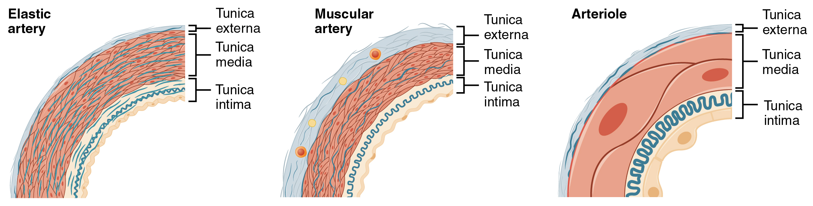
Farther from the heart, where the surge of blood has dampened, the percentage of elastic fibers in an artery’s tunica intima decreases and the amount of smooth muscle in its tunica media increases. The artery at this point is described as amuscular artery. The diameter of muscular arteries typically ranges from 0.1 mm to 10 mm. Their thick tunica media allows muscular arteries to play a leading role in vasoconstriction. In contrast, their decreased quantity of elastic fibers limits their ability to expand. Fortunately, because the blood pressure has eased by the time it reaches these more distant vessels, elasticity has become less important.
Notice that although the distinctions between elastic and muscular arteries are important, there is no “line of demarcation” where an elastic artery suddenly becomes muscular. Rather, there is a gradual transition as the vascular tree repeatedly branches. In turn, muscular arteries branch to distribute blood to the vast network of arterioles. For this reason, a muscular artery is also known as a distributing artery.
Anarterioleis a very small artery that leads to a capillary. Arterioles have the same three tunics as the larger vessels, but the thickness of each is greatly diminished. The critical endothelial lining of the tunica intima is intact. The tunica media is restricted to one or two smooth muscle cell layers in thickness. The tunica externa remains but is very thin (see Figure \(\PageIndex{3}\)).
With a lumen averaging 30 micrometers or less in diameter, arterioles are critical in slowing down—or resisting—blood flow and, thus, causing a substantial drop in blood pressure. Because of this, you may see them referred to as resistance vessels. The muscle fibers in arterioles are normally slightly contracted, causing arterioles to maintain a consistent muscle tone—in this case referred to as vascular tone—in a similar manner to the muscular tone of skeletal muscle. In reality, all blood vessels exhibit vascular tone due to the partial contraction of smooth muscle. The importance of the arterioles is that they will be the primary site of both resistance and regulation of blood pressure. The precise diameter of the lumen of an arteriole at any given moment is determined by neural and chemical controls, and vasoconstriction and vasodilation in the arterioles are the primary mechanisms for distribution of blood flow.
Acapillaryis a microscopic channel that supplies blood to the tissues, a process calledperfusion. Exchange of gases and other substances occurs between the blood in capillaries and the surrounding cells and their tissue fluid (interstitial fluid). The diameter of a capillary lumen ranges from 5–10 micrometers; the smallest are just barely wide enough for an erythrocyte to squeeze through. Flow through capillaries is often described asmicrocirculation.
The wall of a capillary consists of the endothelial layer surrounded by a basement membrane with occasional smooth muscle fibers. There is some variation in wall structure: In a large capillary, several endothelial cells bordering each other may line the lumen; in a small capillary, there may be only a single cell layer that wraps around to contact itself.
For capillaries to function, their walls must be leaky, allowing substances to pass through. There are three major types of capillaries, which differ according to their degree of “leakiness:” continuous, fenestrated, and sinusoid capillaries (Figure \(\PageIndex{4}\)).
#### Continuous Capillaries
The most common type of capillary, thecontinuous capillary, is found in almost all vascularized tissues. Continuous capillaries are characterized by a complete endothelial lining with tight junctions between endothelial cells. Although a tight junction is usually impermeable and only allows for the passage of water and ions, they are often incomplete in capillaries, leaving intercellular clefts that allow for exchange of water and other very small molecules between the blood plasma and the interstitial fluid. Substances that can pass between cells include metabolic products, such as glucose, water, and small hydrophobic molecules like gases and hormones, as well as various leukocytes. Continuous capillaries not associated with the brain are rich in transport vesicles, contributing to either endocytosis or exocytosis. Those in the brain are part of the blood-brain barrier. Here, there are tight junctions and no intercellular clefts, plus a thick basement membrane and astrocyte extensions called end feet; these structures combine to prevent the movement of nearly all substances.
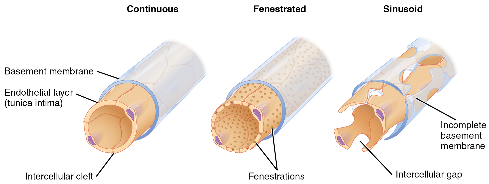
#### Fenestrated Capillaries
Afenestrated capillaryis one that has pores (or fenestrations) in addition to tight junctions in the endothelial lining. These make the capillary permeable to larger molecules. The number of fenestrations and their degree of permeability vary, however, according to their location. Fenestrated capillaries are common in the small intestine, which is the primary site of nutrient absorption, as well as in the kidneys, which filter the blood. They are also found in the choroid plexus of the brain and many endocrine structures, including the hypothalamus, pituitary, pineal, and thyroid glands.
#### Sinusoid Capillaries
Asinusoid capillary(or sinusoid) is the least common type of capillary. Sinusoid capillaries are flattened, and they have extensive intercellular gaps and incomplete basement membranes, in addition to intercellular clefts and fenestrations. This gives them an appearance not unlike Swiss cheese. These very large openings allow for the passage of the largest molecules, including plasma proteins and even cells. Blood flow through sinusoids is very slow, allowing more time for exchange of gases, nutrients, and wastes. Sinusoids are found in the liver and spleen, bone marrow, lymph nodes (where they carry lymph, not blood), and many endocrine glands including the pituitary and adrenal glands. Without these specialized capillaries, these organs would not be able to provide their myriad of functions. For example, when bone marrow forms new blood cells, the cells must enter the blood supply and can only do so through the large openings of a sinusoid capillary; they cannot pass through the small openings of continuous or fenestrated capillaries. The liver also requires extensive specialized sinusoid capillaries in order to process the materials brought to it by the hepatic portal vein from both the digestive tract and spleen, and to release plasma proteins into circulation.
Ametarterioleis a type of vessel that has structural characteristics of both an arteriole and a capillary. Slightly larger than the typical capillary, the smooth muscle of the tunica media of the metarteriole is not continuous but forms rings of smooth muscle (sphincters) prior to the entrance to the capillaries. Each metarteriole arises from a terminal arteriole and branches to supply blood to acapillary bedthat may consist of 10–100 capillaries.
Theprecapillary sphincters, circular smooth muscle cells that surround the capillary at its origin with the metarteriole, tightly regulate the flow of blood from a metarteriole to the capillaries it supplies. Their function is critical: If all of the capillary beds in the body were to open simultaneously, they would collectively hold every drop of blood in the body and there would be none in the arteries, arterioles, venules, veins, or the heart itself. Normally, the precapillary sphincters are closed. When the surrounding tissues need oxygen and have excess waste products, the precapillary sphincters open, allowing blood to flow through and exchange to occur before closing once more (Figure \(\PageIndex{5}\)). If all of the precapillary sphincters in a capillary bed are closed, blood will flow from the metarteriole directly into athoroughfare channeland then into the venous circulation, bypassing the capillary bed entirely. This creates what is known as avascular shunt. In addition, anarteriovenous anastomosismay bypass the capillary bed and lead directly to the venous system.
Although you might expect blood flow through a capillary bed to be smooth, in reality, it moves with an irregular, pulsating flow. This pattern is calledvasomotionand is regulated by chemical signals that are triggered in response to changes in internal conditions, such as oxygen, carbon dioxide, hydrogen ion, and lactic acid levels. For example, during strenuous exercise when oxygen levels decrease and carbon dioxide, hydrogen ion, and lactic acid levels all increase, the capillary beds in skeletal muscle are open, as they would be in the digestive system when nutrients are present in the digestive tract. During sleep or rest periods, vessels in both areas are largely closed; they open only occasionally to allow oxygen and nutrient supplies to travel to the tissues to maintain basic life processes.
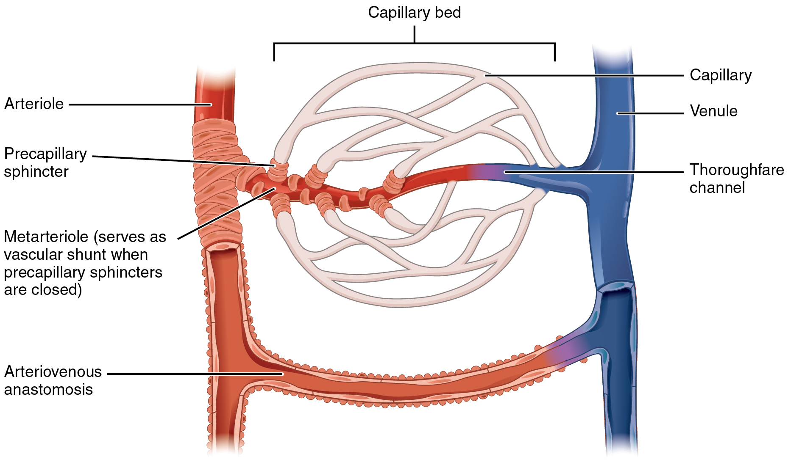
Avenuleis an extremely small vein, generally 8–100 micrometers in diameter. Postcapillary venules join multiple capillaries exiting from a capillary bed. Multiple venules join to form veins. The walls of venules consist of endothelium, a thin middle layer with a few muscle cells and elastic fibers, plus an outer layer of connective tissue fibers that constitute a very thin tunica externa (Figure 20.7). Venules as well as capillaries are the primary sites of emigration or diapedesis, in which the white blood cells adhere to the endothelial lining of the vessels and then squeeze through adjacent cells to enter the tissue fluid.
Aveinis a blood vessel that conducts blood toward the heart. Compared to arteries, veins are thin-walled vessels with large and irregular lumens (see Figure \(\PageIndex{6}\)). Because they are low-pressure vessels, larger veins are commonly equipped with valves that promote the unidirectional flow of blood toward the heart and prevent backflow toward the capillaries caused by the inherent low blood pressure in veins as well as the pull of gravity. Table \(\PageIndex{2}\) compares the features of arteries and veins.
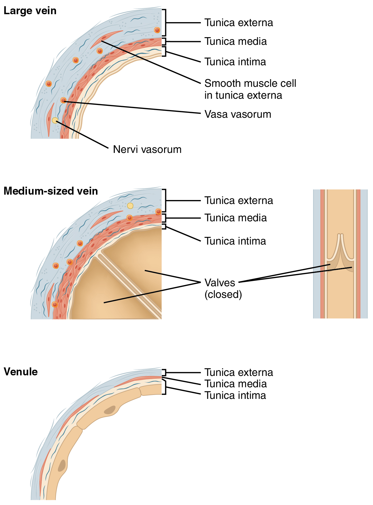
| Arteries | Veins | |
|---|---|---|
| Direction of blood flow | Conducts blood away from the heart | Conducts blood toward the heart |
| General appearance | Rounded | Irregular, often collapsed |
| Pressure | High | Low |
| Wall thickness | Thick | Thin |
| Relative oxygen concentration | Higher in systemic arteriesLower in pulmonary arteries | Lower in systemic veinsHigher in pulmonary veins |
| Valves | Not present | Present most commonly in limbs and in veins inferior to the heart |
#### Cardiovascular System: Edema and Varicose Veins
Despite the presence of valves and the contributions of other anatomical and physiological adaptations we will cover shortly, over the course of a day, some blood will inevitably pool, especially in the lower limbs, due to the pull of gravity. Any blood that accumulates in a vein will increase the pressure within it, which can then be reflected back into the smaller veins, venules, and eventually even the capillaries. Increased pressure will promote the flow of fluids out of the capillaries and into the interstitial fluid. The presence of excess tissue fluid around the cells leads to a condition called edema.
Most people experience a daily accumulation of tissue fluid, especially if they spend much of their work life on their feet (like most health professionals). However, clinical edema goes beyond normal swelling and requires medical treatment. Edema has many potential causes, including hypertension and heart failure, severe protein deficiency, renal failure, and many others. In order to treat edema, which is a sign rather than a discrete disorder, the underlying cause must be diagnosed and alleviated.
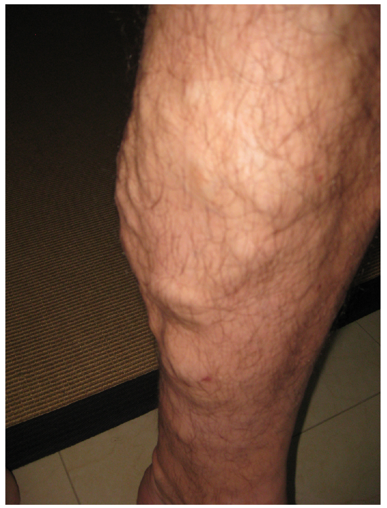
Edema may be accompanied by varicose veins, especially in the superficial veins of the legs (Figure \(\PageIndex{7}\)). This disorder arises when defective valves allow blood to accumulate within the veins, causing them to distend, twist, and become visible on the surface of the integument. Varicose veins may occur in all people, but are more common in females and are often related to pregnancy. More than simple cosmetic blemishes, varicose veins are often painful and sometimes itchy or throbbing. Without treatment, they tend to grow worse over time. The use of support hose, as well as elevating the feet and legs whenever possible, may be helpful in alleviating this condition. Laser surgery and interventional radiologic procedures can reduce the size and severity of varicose veins. Severe cases may require conventional surgery to remove the damaged vessels. As there are typically redundant circulation patterns, that is, anastomoses, for the smaller and more superficial veins, removal does not typically impair the circulation. There is evidence that patients with varicose veins suffer a greater risk of developing a thrombus or clot.
In addition to their primary function of returning blood to the heart, veins may be considered blood reservoirs, since systemic veins contain approximately 64 percent of the blood volume at any given time (Figure \(\PageIndex{8}\)). Their ability to hold this much blood is due to their highcapacitance, that is, their capacity to distend (expand) readily to store a high volume of blood, even at a low pressure. The large lumens and relatively thin walls of veins make them far more distensible than arteries; thus, they are said to becapacitance vessels.
![This table describes the distribution of blood flow. 84 percent of blood flow is systemic circulation, of which 64 percent happens in systemic veins (18 percent in large veins, 21 percent in large venous networks such as liver, bone marrow, and integument, and 25 percent in venules and medium-sized veins); 13 percent happens in systemic arteries (2 percent in arterioles, 5 percent in muscular arteries, 4 percent in elastic arteries, and 2 percent in the aorta); and 7 percent happens in systemic capillaries. 9 percent of blood flow is pulmonary circulation, of which 4 percent happens in pulmonary veins, 2 percent happens in pulmonary capillaries, and 3 percent happens in pulmonary arteries. The remaining 7 percent of blood flow is in the heart.](images/ch20/fig20-9-this-table-describes-the-distribution-of.jpg)
When blood flow needs to be redistributed to other portions of the body, the vasomotor center located in the medulla oblongata sends sympathetic stimulation to the smooth muscles in the walls of the veins, causing constriction—or in this case, venoconstriction. Less dramatic than the vasoconstriction seen in smaller arteries and arterioles, venoconstriction may be likened to a “stiffening” of the vessel wall. This increases pressure on the blood within the veins, speeding its return to the heart. As you will note in Figure \(\PageIndex{8}\), approximately 21 percent of the venous blood is located in venous networks within the liver, bone marrow, and integument. This volume of blood is referred to asvenous reserve. Through venoconstriction, this “reserve” volume of blood can get back to the heart more quickly for redistribution to other parts of the circulation.
#### Vascular Surgeons and Technicians
Vascular surgery is a specialty in which the physician deals primarily with diseases of the vascular portion of the cardiovascular system. This includes repair and replacement of diseased or damaged vessels, removal of plaque from vessels, minimally invasive procedures including the insertion of venous catheters, and traditional surgery. Following completion of medical school, the physician generally completes a 5-year surgical residency followed by an additional 1 to 2 years of vascular specialty training. In the United States, most vascular surgeons are members of the Society of Vascular Surgery.
Vascular technicians are specialists in imaging technologies that provide information on the health of the vascular system. They may also assist physicians in treating disorders involving the arteries and veins. This profession often overlaps with cardiovascular technology, which would also include treatments involving the heart. Although recognized by the American Medical Association, there are currently no licensing requirements for vascular technicians, and licensing is voluntary. Vascular technicians typically have an Associate’s degree or certificate, involving 18 months to 2 years of training. The United States Bureau of Labor projects this profession to grow by 29 percent from 2010 to 2020.
Visit thissiteto learn more about vascular surgery.
Visit thissiteto learn more about vascular technicians.
📖 OpenStax Anatomy & Physiology 2e, Section 20.2. openstax.org · CC BY 4.0
- Distinguish between systolic pressure, diastolic pressure, pulse pressure, and mean arterial pressure
- Describe the clinical measurement of pulse and blood pressure
- Identify and discuss five variables affecting arterial blood flow and blood pressure
- Discuss several factors affecting blood flow in the venous system
Blood flowrefers to the movement of blood through a vessel, tissue, or organ, and is usually expressed in terms of volume of blood per unit of time. It is initiated by the contraction of the ventricles of the heart. Ventricular contraction ejects blood into the major arteries, resulting in flow from regions of higher pressure to regions of lower pressure, as blood encounters smaller arteries and arterioles, then capillaries, then the venules and veins of the venous system. This section discusses a number of critical variables that contribute to blood flow throughout the body. It also discusses the factors that impede or slow blood flow, a phenomenon known asresistance.
As noted earlier, hydrostatic pressure is the force exerted by a fluid due to gravitational pull, usually against the wall of the container in which it is located. One form of hydrostatic pressure isblood pressure, the force exerted by blood upon the walls of the blood vessels or the chambers of the heart. Blood pressure may be measured in capillaries and veins, as well as the vessels of the pulmonary circulation; however, the term blood pressure without any specific descriptors typically refers to systemic arterial blood pressure—that is, the pressure of blood flowing in the arteries of the systemic circulation. In clinical practice, this pressure is measured in mm Hg and is usually obtained using the brachial artery of the arm.
Arterial blood pressure in the larger vessels consists of several distinct components (Figure \(\PageIndex{1}\)): systolic and diastolic pressures, pulse pressure, and mean arterial pressure.
#### Systolic and Diastolic Pressures
When systemic arterial blood pressure is measured, it is recorded as a ratio of two numbers (e.g., 120/80 is a normal adult blood pressure), expressed as systolic pressure over diastolic pressure. Thesystolic pressureis the higher value (typically around 120 mm Hg) and reflects the arterial pressure resulting from the ejection of blood during ventricular contraction, or systole. Thediastolic pressureis the lower value (usually about 80 mm Hg) and represents the arterial pressure of blood during ventricular relaxation, or diastole.
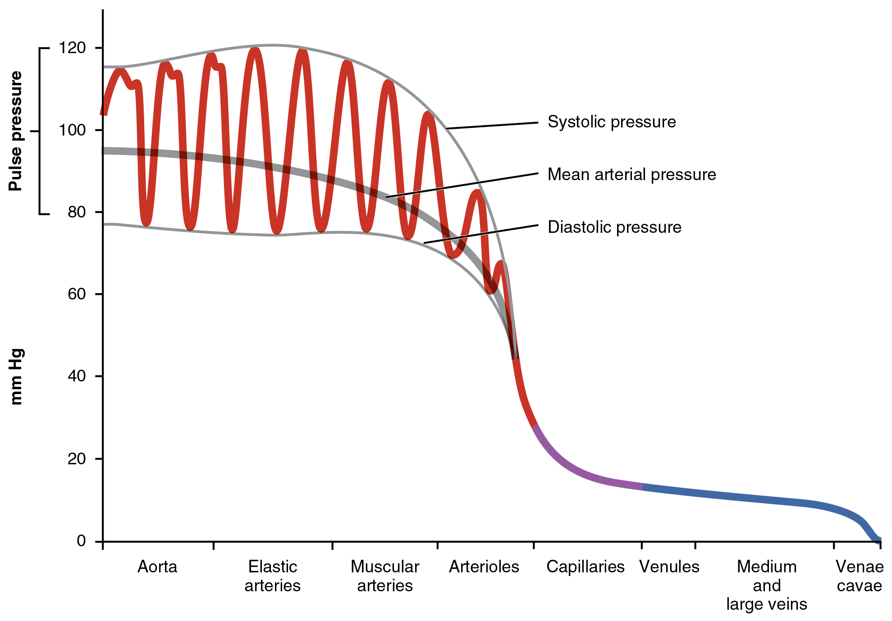
As shown in Figure 20.10, the difference between the systolic pressure and the diastolic pressure is thepulse pressure. For example, an individual with a systolic pressure of 120 mm Hg and a diastolic pressure of 80 mm Hg would have a pulse pressure of 40 mmHg.
Generally, a pulse pressure should be at least 25 percent of the systolic pressure. A pulse pressure below this level is described as low or narrow. This may occur, for example, in patients with a low stroke volume, which may be seen in congestive heart failure, stenosis of the aortic valve, or significant blood loss following trauma. In contrast, a high or wide pulse pressure is common in healthy people following strenuous exercise, when their resting pulse pressure of 30–40 mm Hg may increase temporarily to 100 mm Hg as stroke volume increases. A persistently high pulse pressure at or above 100 mm Hg may indicate excessive resistance in the arteries and can be caused by a variety of disorders. Chronic high resting pulse pressures can degrade the heart, brain, and kidneys, and warrant medical treatment.
#### Mean Arterial Pressure
Mean arterial pressure (MAP)represents the “average” pressure of blood in the arteries, that is, the average force driving blood into vessels that serve the tissues. Mean is a statistical concept and is calculated by taking the sum of the values divided by the number of values. Although complicated to measure directly and complicated to calculate, MAP can be approximated by adding the diastolic pressure to one-third of the pulse pressure or systolic pressure minus the diastolic pressure:
\[\mathrm{MAP}=\text { diastolic } \mathrm{BP}+\frac{\text { (systolic BP-diastolic BP })}{3}\]
\[\mathrm{MAP}=\text { diastolic } \mathrm{BP}+\frac{\text { (pulse pressure) }}{3}\]
In Figure \(\PageIndex{1}\), this value is approximately 80 + (120 − 80) / 3, or 93.33. Normally, the MAP falls within the range of 70–110 mm Hg. If the value falls below 60 mm Hg for an extended time, blood pressure will not be high enough to ensure circulation to and through the tissues, which results in ischemia, or insufficient blood flow. A condition called hypoxia, inadequate oxygenation of tissues, commonly accompanies ischemia. The term hypoxemia refers to low levels of oxygen in systemic arterial blood. Neurons are especially sensitive to hypoxia and may die or be damaged if blood flow and oxygen supplies are not quickly restored.
After blood is ejected from the heart, elastic fibers in the arteries help maintain a high-pressure gradient as they expand to accommodate the blood, then recoil. This expansion and recoiling effect, known as thepulse, can be palpated manually or measured electronically. Although the effect diminishes over distance from the heart, elements of the systolic and diastolic components of the pulse are still evident down to the level of the arterioles.
Because pulse indicates heart rate, it is measured clinically to provide clues to a patient’s state of health. It is recorded as beats per minute. Both the rate and the strength of the pulse are important clinically. A high or irregular pulse rate can be caused by physical activity or other temporary factors, but it may also indicate a heart condition. The pulse strength indicates the strength of ventricular contraction and cardiac output. If the pulse is strong, then systolic pressure is high. If it is weak, systolic pressure has fallen, and medical intervention may be warranted.
Pulse can be palpated manually by placing the tips of the fingers across an artery that runs close to the body surface and pressing lightly. While this procedure is normally performed using the radial artery in the wrist or the common carotid artery in the neck, any superficial artery that can be palpated may be used (Figure \(\PageIndex{2}\)). Common sites to find a pulse include temporal and facial arteries in the head, brachial arteries in the upper arm, femoral arteries in the thigh, popliteal arteries behind the knees, posterior tibial arteries near the medial tarsal regions, and dorsalis pedis arteries in the feet. A variety of commercial electronic devices are also available to measure pulse.
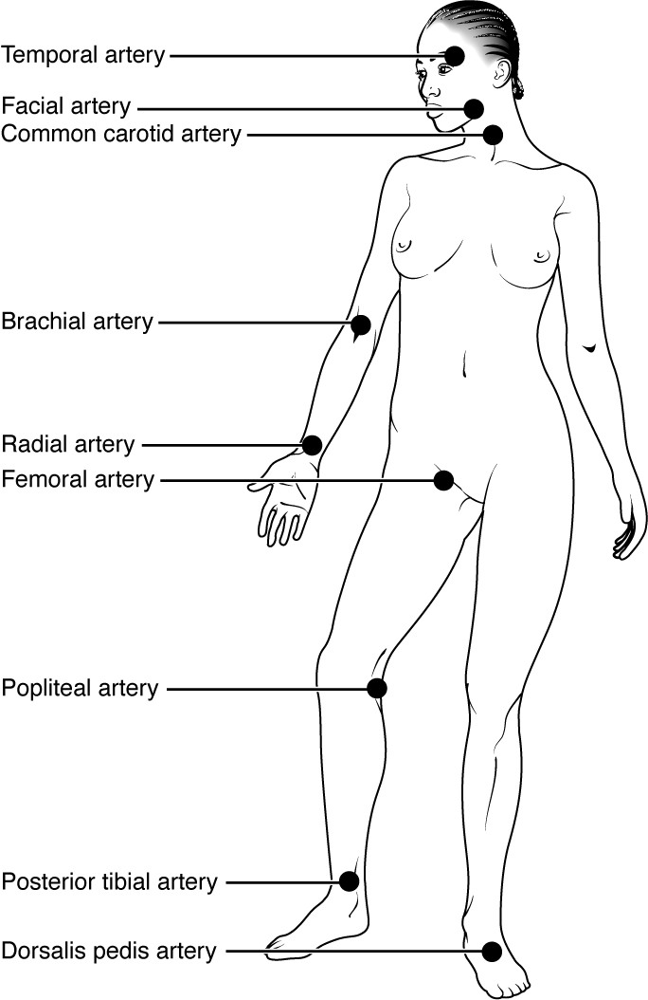
Blood pressure is one of the critical parameters measured on virtually every patient in every healthcare setting. The technique used today was developed more than 100 years ago by a pioneering Russian physician, Dr. Nikolai Korotkoff. Turbulent blood flow through the vessels can be heard as a soft ticking while measuring blood pressure; these sounds are known asKorotkoff sounds. The technique of measuring blood pressure requires the use of asphygmomanometer(a blood pressure cuff attached to a measuring device) and a stethoscope. The technique is as follows:
Although there are five recognized Korotkoff sounds, only two are normally recorded. Initially, no sounds are heard since there is no blood flow through the vessels, but as air pressure drops, the cuff relaxes, and blood flow returns to the arm. As shown in Figure \(\PageIndex{3}\), the first sound heard through the stethoscope—the first Korotkoff sound—indicates systolic pressure. As more air is released from the cuff, blood is able to flow freely through the brachial artery and all sounds disappear. The point at which the last sound is heard is recorded as the patient’s diastolic pressure.
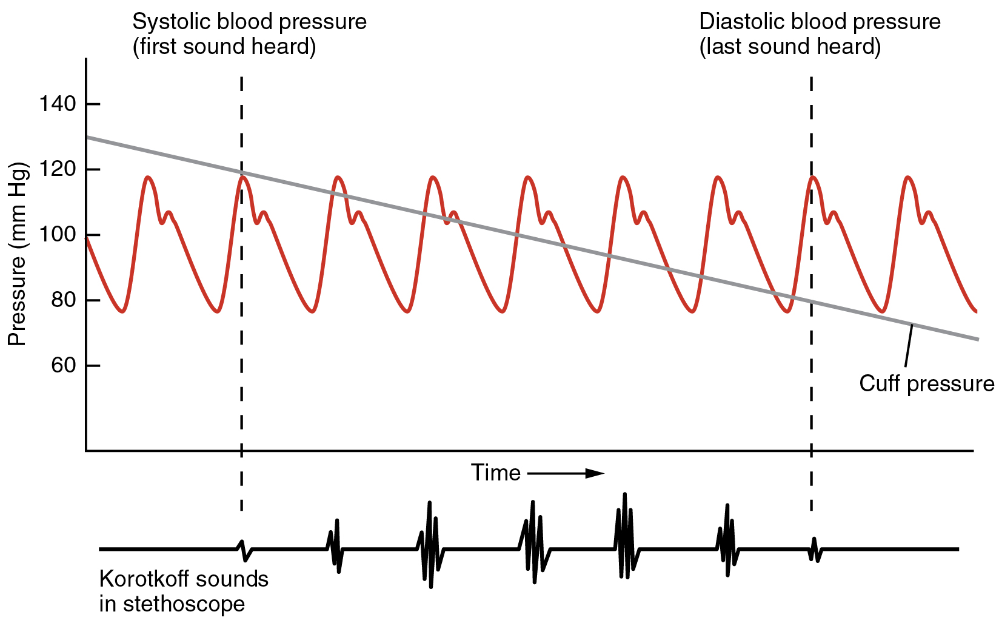
The majority of hospitals and clinics have automated equipment for measuring blood pressure that work on the same principles. An even more recent innovation is a small instrument that wraps around a patient’s wrist. The patient then holds the wrist over the heart while the device measures blood flow and records pressure.
Five variables influence blood flow and blood pressure:
Recall that blood moves from higher pressure to lower pressure. It is pumped from the heart into the arteries at high pressure. If you increase pressure in the arteries (afterload), and cardiac function does not compensate, blood flow will actually decrease. In the venous system, the opposite relationship is true. Increased pressure in the veins does not decrease flow as it does in arteries, but actually increases flow. Since pressure in the veins is normally relatively low, for blood to flow back into the heart, the pressure in the atria during atrial diastole must be even lower. It normally approaches zero, except when the atria contract (see Figure \(\PageIndex{1}\)).
Cardiac output is the measurement of blood flow from the heart through the ventricles, and is usually measured in liters per minute. Any factor that causes cardiac output to increase, by elevating heart rate or stroke volume or both, will elevate blood pressure and promote blood flow. These factors include sympathetic stimulation, the catecholamines epinephrine and norepinephrine, thyroid hormones, and increased calcium ion levels. Conversely, any factor that decreases cardiac output, by decreasing heart rate or stroke volume or both, will decrease arterial pressure and blood flow. These factors include parasympathetic stimulation, elevated or decreased potassium ion levels, decreased calcium levels, anoxia, and acidosis.
Complianceis the ability of any compartment to expand to accommodate increased content. A metal pipe, for example, is not compliant, whereas a balloon is. The greater the compliance of an artery, the more effectively it is able to expand to accommodate surges in blood flow without increased resistance or blood pressure. Veins are more compliant than arteries and can expand to hold more blood. When vascular disease causes stiffening of arteries, compliance is reduced and resistance to blood flow is increased. The result is more turbulence, higher pressure within the vessel, and reduced blood flow. This increases the work of the heart.
#### A Mathematical Approach to Factors Affecting Blood Flow
Jean Louis Marie Poiseuille was a French physician and physiologist who devised a mathematical equation describing blood flow and its relationship to known parameters. The same equation also applies to engineering studies of the flow of fluids. Although understanding the math behind the relationships among the factors affecting blood flow is not necessary to understand blood flow, it can help solidify an understanding of their relationships. Please note that even if the equation looks intimidating, breaking it down into its components and following the relationships will make these relationships clearer, even if you are weak in math. Focus on the three critical variables: radius (r), vessel length (λ), and viscosity (η).
Poiseuille’s equation:
\[\text { Blood flow }=\frac{\pi \Delta \mathrm{P} \mathrm{r}^4}{8 \eta \lambda}\]
Blood flow =π ΔP r48ηλ
One of several things this equation allows us to do is calculate the resistance in the vascular system. Normally this value is extremely difficult to measure, but it can be calculated from this known relationship:
Blood flow =ΔPResistance
\[\text { Blood flow }=\frac{\Delta \mathrm{P}}{\text { Resistance }}\]
If we rearrange this slightly,
\[\text { Resistance }=\frac{\Delta \mathrm{P}}{\text { Blood flow }}\]Resistance =ΔPBlood flow
Then by substituting Pouseille’s equation for blood flow
\[\text { Resistance }=\frac{8 \eta \lambda}{\pi \mathrm{r}^4}\]
By examining this equation, you can see that there are only three variables: viscosity, vessel length, and radius, since 8 and π are both constants. The important thing to remember is this: Two of these variables, viscosity and vessel length, will change slowly in the body. Only one of these factors, the radius, can be changed rapidly by vasoconstriction and vasodilation, thus dramatically impacting resistance and flow. Further, small changes in the radius will greatly affect flow, since it is raised to the fourth power in the equation.
We have briefly considered how cardiac output and blood volume impact blood flow and pressure; the next step is to see how the other variables (contraction, vessel length, and viscosity) articulate with Pouseille’s equation and what they can teach us about the impact on blood flow.
The relationship between blood volume, blood pressure, and blood flow is intuitively obvious. Water may merely trickle along a creek bed in a dry season, but rush quickly and under great pressure after a heavy rain. Similarly, as blood volume decreases, pressure and flow decrease. As blood volume increases, pressure and flow increase.
Under normal circumstances, blood volume varies little. Low blood volume, calledhypovolemia, may be caused by bleeding, dehydration, vomiting, severe burns, or some medications used to treat hypertension. It is important to recognize that other regulatory mechanisms in the body are so effective at maintaining blood pressure that an individual may be asymptomatic until 10–20 percent of the blood volume has been lost. Treatment typically includes intravenous fluid replacement.
Hypervolemia, excessive fluid volume, may be caused by retention of water and sodium, as seen in patients with heart failure, liver cirrhosis, some forms of kidney disease, hyperaldosteronism, and some glucocorticoid steroid treatments. Restoring homeostasis in these patients depends upon reversing the condition that triggered the hypervolemia.
Viscosity is the thickness of fluids that affects their ability to flow. Clean water, for example, is less viscous than mud. The viscosity of blood is directly proportional to resistance and inversely proportional to flow; therefore, any condition that causes viscosity to increase will also increase resistance and decrease flow. For example, imagine sipping milk, then a milkshake, through the same size straw. You experience more resistance and therefore less flow from the milkshake. Conversely, any condition that causes viscosity to decrease (such as when the milkshake melts) will decrease resistance and increase flow.
Normally the viscosity of blood does not change over short periods of time. The two primary determinants of blood viscosity are the formed elements and plasma proteins. Since the vast majority of formed elements are erythrocytes, any condition affecting erythropoiesis, such as polycythemia or anemia, can alter viscosity. Since most plasma proteins are produced by the liver, any condition affecting liver function can also change the viscosity slightly and therefore alter blood flow. Liver abnormalities such as hepatitis, cirrhosis, alcohol damage, and drug toxicities result in decreased levels of plasma proteins, which decrease blood viscosity. While leukocytes and platelets are normally a small component of the formed elements, there are some rare conditions in which severe overproduction can impact viscosity as well.
#### Vessel Length and Diameter
The length of a vessel is directly proportional to its resistance: the longer the vessel, the greater the resistance and the lower the flow. As with blood volume, this makes intuitive sense, since the increased surface area of the vessel will impede the flow of blood. Likewise, if the vessel is shortened, the resistance will decrease and flow will increase.
The length of our blood vessels increases throughout childhood as we grow, of course, but is unchanging in adults under normal physiological circumstances. Further, the distribution of vessels is not the same in all tissues. Adipose tissue does not have an extensive vascular supply. One pound of adipose tissue contains approximately 200 miles of vessels, whereas skeletal muscle contains more than twice that. Overall, vessels decrease in length only during loss of mass or amputation. An individual weighing 150 pounds has approximately 60,000 miles of vessels in the body. Gaining about 10 pounds adds from 2000 to 4000 miles of vessels, depending upon the nature of the gained tissue. One of the great benefits of weight reduction is the reduced stress to the heart, which does not have to overcome the resistance of as many miles of vessels.
In contrast to length, the diameter of blood vessels changes throughout the body, according to the type of vessel, as we discussed earlier. The diameter of any given vessel may also change frequently throughout the day in response to neural and chemical signals that trigger vasodilation and vasoconstriction. Thevascular toneof the vessel is the contractile state of the smooth muscle and the primary determinant of diameter, and thus of resistance and flow. The effect of vessel diameter on resistance is inverse: Given the same volume of blood, an increased diameter means there is less blood contacting the vessel wall, thus lower friction and lower resistance, subsequently increasing flow. A decreased diameter means more of the blood contacts the vessel wall, and resistance increases, subsequently decreasing flow.
The influence of lumen diameter on resistance is dramatic: A slight increase or decrease in diameter causes a huge decrease or increase in resistance. This is because resistance is inversely proportional to the radius of the blood vessel (one-half of the vessel’s diameter) raised to the fourth power (R = 1/r4). This means, for example, that if an artery or arteriole constricts to one-half of its original radius, the resistance to flow will increase 16 times. And if an artery or arteriole dilates to twice its initial radius, then resistance in the vessel will decrease to 1/16 of its original value and flow will increase 16 times.
#### The Roles of Vessel Diameter and Total Area in Blood Flow and Blood Pressure
Recall that we classified arterioles as resistance vessels, because given their small lumen, they dramatically slow the flow of blood from arteries. In fact, arterioles are the site of greatest resistance in the entire vascular network. This may seem surprising, given that capillaries have a smaller size. How can this phenomenon be explained?
Figure \(\PageIndex{4}\) compares vessel diameter, total cross-sectional area, average blood pressure, and blood velocity through the systemic vessels. Notice in parts (a) and (b) that the total cross-sectional area of the body’s capillary beds is far greater than any other type of vessel. Although the diameter of an individual capillary is significantly smaller than the diameter of an arteriole, there are vastly more capillaries in the body than there are other types of blood vessels. Part (c) shows that blood pressure drops unevenly as blood travels from arteries to arterioles, capillaries, venules, and veins, and encounters greater resistance. However, the site of the most precipitous drop, and the site of greatest resistance, is the arterioles. This explains why vasodilation and vasoconstriction of arterioles play more significant roles in regulating blood pressure than do the vasodilation and vasoconstriction of other vessels.
Part (d) shows that the velocity (speed) of blood flow decreases dramatically as the blood moves from arteries to arterioles to capillaries. This slow flow rate allows more time for exchange processes to occur. As blood flows through the veins, the rate of velocity increases, as blood is returned to the heart.
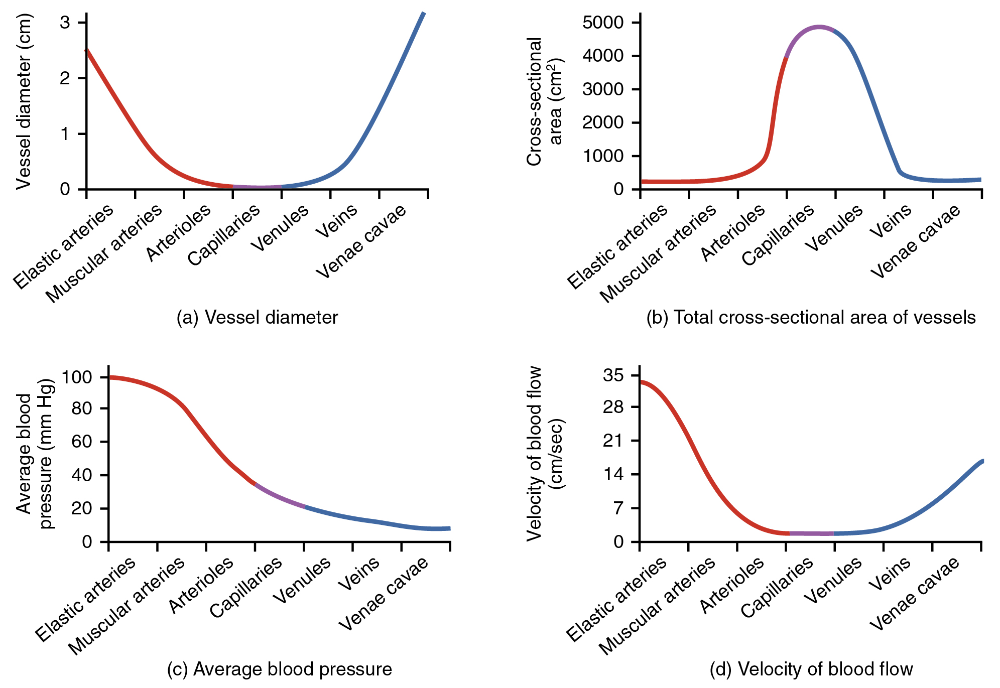
#### Cardiovascular System: Arteriosclerosis
Compliance allows an artery to expand when blood is pumped through it from the heart, and then to recoil after the surge has passed. This helps promote blood flow. In arteriosclerosis, compliance is reduced, and pressure and resistance within the vessel increase. This is a leading cause of hypertension and coronary heart disease, as it causes the heart to work harder to generate a pressure great enough to overcome the resistance.
Arteriosclerosis begins with injury to the endothelium of an artery, which may be caused by irritation from high blood glucose, infection, tobacco use, excessive blood lipids, and other factors. Artery walls that are constantly stressed by blood flowing at high pressure are also more likely to be injured—which means that hypertension can promote arteriosclerosis, as well as result from it.
Recall that tissue injury causes inflammation. As inflammation spreads into the artery wall, it weakens and scars it, leaving it stiff (sclerotic). As a result, compliance is reduced. Moreover, circulating triglycerides and cholesterol can seep between the damaged lining cells and become trapped within the artery wall, where they are frequently joined by leukocytes, calcium, and cellular debris. Eventually, this buildup, called plaque, can narrow arteries enough to impair blood flow. The term for this condition, atherosclerosis (athero- = “porridge”) describes the mealy deposits (Figure \(\PageIndex{5}\)).
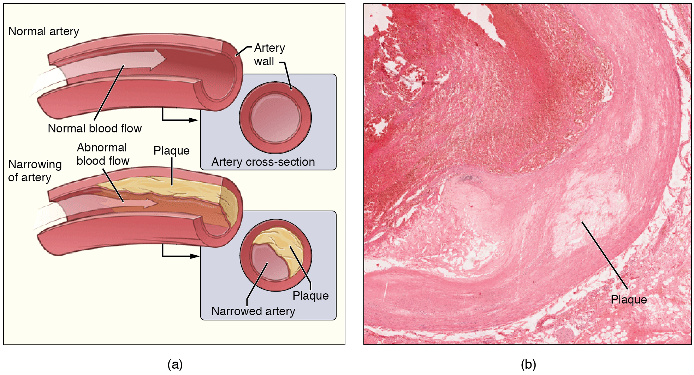
Sometimes a plaque can rupture, causing microscopic tears in the artery wall that allow blood to leak into the tissue on the other side. When this happens, platelets rush to the site to clot the blood. This clot can further obstruct the artery and—if it occurs in a coronary or cerebral artery—cause a sudden heart attack or stroke. Alternatively, plaque can break off and travel through the bloodstream as an embolus until it blocks a more distant, smaller artery.
Even without total blockage, vessel narrowing leads to ischemia—reduced blood flow—to the tissue region “downstream” of the narrowed vessel. Ischemia in turn leads to hypoxia—decreased supply of oxygen to the tissues. Hypoxia involving cardiac muscle or brain tissue can lead to cell death and severe impairment of brain or heart function.
A major risk factor for both arteriosclerosis and atherosclerosis is advanced age, as the conditions tend to progress over time. Arteriosclerosis is normally defined as the more generalized loss of compliance, “hardening of the arteries,” whereas atherosclerosis is a more specific term for the build-up of plaque in the walls of the vessel and is a specific type of arteriosclerosis. There is also a distinct genetic component, and pre-existing hypertension and/or diabetes also greatly increase the risk. However, obesity, poor nutrition, lack of physical activity, and tobacco use all are major risk factors.
Treatment includes lifestyle changes, such as weight loss, smoking cessation, regular exercise, and adoption of a diet low in sodium and saturated fats. Medications to reduce cholesterol and blood pressure may be prescribed. For blocked coronary arteries, surgery is warranted. In angioplasty, a catheter is inserted into the vessel at the point of narrowing, and a second catheter with a balloon-like tip is inflated to widen the opening. To prevent subsequent collapse of the vessel, a small mesh tube called a stent is often inserted. In an endarterectomy, plaque is surgically removed from the walls of a vessel. This operation is typically performed on the carotid arteries of the neck, which are a prime source of oxygenated blood for the brain. In a coronary bypass procedure, a non-vital superficial vessel from another part of the body (often the great saphenous vein) or a synthetic vessel is inserted to create a path around the blocked area of a coronary artery.
The pumping action of the heart propels the blood into the arteries, from an area of higher pressure toward an area of lower pressure. If blood is to flow from the veins back into the heart, the pressure in the veins must be greater than the pressure in the atria of the heart. Two factors help maintain this pressure gradient between the veins and the heart. First, the pressure in the atria during diastole is very low, often approaching zero when the atria are relaxed (atrial diastole). Second, two physiologic “pumps” increase pressure in the venous system. The use of the term “pump” implies a physical device that speeds flow. These physiological pumps are less obvious.
#### Skeletal Muscle Pump
In many body regions, the pressure within the veins can be increased by the contraction of the surrounding skeletal muscle. This mechanism, known as theskeletal muscle pump(Figure \(\PageIndex{6}\)), helps the lower-pressure veins counteract the force of gravity, increasing pressure to move blood back to the heart. As leg muscles contract, for example during walking or running, they exert pressure on nearby veins with their numerous one-way valves. This increased pressure causes blood to flow upward, opening valves superior to the contracting muscles so blood flows through. Simultaneously, valves inferior to the contracting muscles close; thus, blood should not seep back downward toward the feet. Military recruits are trained to flex their legs slightly while standing at attention for prolonged periods. Failure to do so may allow blood to pool in the lower limbs rather than returning to the heart. Consequently, the brain will not receive enough oxygenated blood, and the individual may lose consciousness.
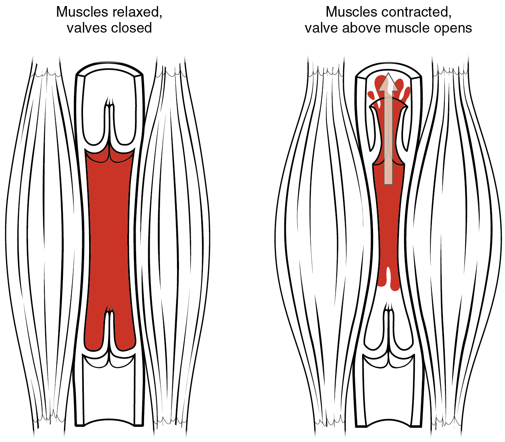
#### Respiratory Pump
Therespiratory pumpaids blood flow through the veins of the thorax and abdomen. During inhalation, the volume of the thorax increases, largely through the contraction of the diaphragm, which moves downward and compresses the abdominal cavity. The elevation of the chest caused by the contraction of the external intercostal muscles also contributes to the increased volume of the thorax. The volume increase causes air pressure within the thorax to decrease, allowing us to inhale. Additionally, as air pressure within the thorax drops, blood pressure in the thoracic veins also decreases, falling below the pressure in the abdominal veins. This causes blood to flow along its pressure gradient from veins outside the thorax, where pressure is higher, into the thoracic region, where pressure is now lower. This in turn promotes the return of blood from the thoracic veins to the atria. During exhalation, when air pressure increases within the thoracic cavity, pressure in the thoracic veins increases, speeding blood flow into the heart while valves in the veins prevent blood from flowing backward from the thoracic and abdominal veins.
#### Pressure Relationships in the Venous System
Although vessel diameter increases from the smaller venules to the larger veins and eventually to the venae cavae (singular = vena cava), the total cross-sectional area actually decreases (see Figure \(\PageIndex{2}\)aandb). The individual veins are larger in diameter than the venules, but their total number is much lower, so their total cross-sectional area is also lower.
Also notice that, as blood moves from venules to veins, the average blood pressure drops (see Figure 20.13c), but the blood velocity actually increases (see Figure 20.13d). This pressure gradient drives blood back toward the heart. Again, the presence of one-way valves and the skeletal muscle and respiratory pumps contribute to this increased flow. Since approximately 64 percent of the total blood volume resides in systemic veins, any action that increases the flow of blood through the veins will increase venous return to the heart. Maintaining vascular tone within the veins prevents the veins from merely distending, dampening the flow of blood, and as you will see, vasoconstriction actually enhances the flow.
#### The Role of Venoconstriction in Resistance, Blood Pressure, and Flow
As previously discussed, vasoconstriction of an artery or arteriole decreases the radius, increasing resistance and pressure, but decreasing flow. Venoconstriction, on the other hand, has a very different outcome. The walls of veins are thin but irregular; thus, when the smooth muscle in those walls constricts, the lumen becomes more rounded. The more rounded the lumen, the less surface area the blood encounters, and the less resistance the vessel offers. Vasoconstriction increases pressure within a vein as it does in an artery, but in veins, the increased pressure increases flow. Recall that the pressure in the atria, into which the venous blood will flow, is very low, approaching zero for at least part of the relaxation phase of the cardiac cycle. Thus, venoconstriction increases the return of blood to the heart. Another way of stating this is that venoconstriction increases the preload or stretch of the cardiac muscle and increases contraction.
📖 OpenStax Anatomy & Physiology 2e, Section 20.3. openstax.org · CC BY 4.0
- Identify the primary mechanisms of capillary exchange
- Distinguish between capillary hydrostatic pressure and blood colloid osmotic pressure, explaining the contribution of each to net filtration pressure
- Compare filtration and reabsorption
- Explain the fate of fluid that is not reabsorbed from the tissues into the vascular capillaries
The primary purpose of the cardiovascular system is to circulate gases, nutrients, wastes, and other substances to and from the cells of the body. Small molecules, such as gases, lipids, and lipid-soluble molecules, can diffuse directly through the membranes of the endothelial cells of the capillary wall. Glucose, amino acids, and ions—including sodium, potassium, calcium, and chloride—use transporters to move through specific channels in the membrane by facilitated diffusion. Glucose, ions, and larger molecules may also leave the blood through intercellular clefts. Larger molecules can pass through the pores of fenestrated capillaries, and even large plasma proteins can pass through the great gaps in the sinusoids. Some large proteins in blood plasma can move into and out of the endothelial cells packaged within vesicles by endocytosis and exocytosis. Water moves by osmosis.
The mass movement of fluids into and out of capillary beds requires a transport mechanism far more efficient than mere diffusion. This movement, often referred to as bulk flow, involves two pressure-driven mechanisms: Volumes of fluid move from an area of higher pressure in a capillary bed to an area of lower pressure in the tissues viafiltration. In contrast, the movement of fluid from an area of higher pressure in the tissues into an area of lower pressure in the capillaries isreabsorption. Two types of pressure interact to drive each of these movements: hydrostatic pressure and osmotic pressure.
#### Hydrostatic Pressure
The primary force driving fluid transport between the capillaries and tissues is hydrostatic pressure, which can be defined as the pressure of any fluid enclosed in a space.Blood hydrostatic pressureis the force exerted by the blood confined within blood vessels or heart chambers. Even more specifically, the pressure exerted by blood against the wall of a capillary is calledcapillary hydrostatic pressure (CHP), and is the same as capillary blood pressure. CHP is the force that drives fluid out of capillaries and into the tissues.
As fluid exits a capillary and moves into tissues, the hydrostatic pressure in the interstitial fluid correspondingly rises. This opposing hydrostatic pressure is called theinterstitial fluid hydrostatic pressure (IFHP). Generally, the CHP originating from the arterial pathways is considerably higher than the IFHP, because lymphatic vessels are continually absorbing excess fluid from the tissues. Thus, fluid generally moves out of the capillary and into the interstitial fluid. This process is called filtration.
#### Osmotic Pressure
The net pressure that drives reabsorption—the movement of fluid from the interstitial fluid back into the capillaries—is called osmotic pressure (sometimes referred to as oncotic pressure). Whereas hydrostatic pressure forces fluid out of the capillary, osmotic pressure draws fluid back in. Osmotic pressure is determined by osmotic concentration gradients, that is, the difference in the solute-to-water concentrations in the blood and tissue fluid. A region higher in solute concentration (and lower in water concentration) draws water across a semipermeable membrane from a region higher in water concentration (and lower in solute concentration).
As we discuss osmotic pressure in blood and tissue fluid, it is important to recognize that the formed elements of blood do not contribute to osmotic concentration gradients. Rather, it is the plasma proteins that play the key role. Solutes also move across the capillary wall according to their concentration gradient, but overall, the concentrations should be similar and not have a significant impact on osmosis. Because of their large size and chemical structure, plasma proteins are not truly solutes, that is, they do not dissolve but are dispersed or suspended in their fluid medium, forming a colloid rather than a solution.
The pressure created by the concentration of colloidal proteins in the blood is called theblood colloidal osmotic pressure (BCOP). Its effect on capillary exchange accounts for the reabsorption of water. The plasma proteins suspended in blood cannot move across the semipermeable capillary cell membrane, and so they remain in the plasma. As a result, blood has a higher colloidal concentration and lower water concentration than tissue fluid. It therefore attracts water. We can also say that the BCOP is higher than theinterstitial fluid colloidal osmotic pressure (IFCOP), which is always very low because interstitial fluid contains few proteins. Thus, water is drawn from the tissue fluid back into the capillary, carrying dissolved molecules with it. This difference in colloidal osmotic pressure accounts for reabsorption.
#### Interaction of Hydrostatic and Osmotic Pressures
The normal unit used to express pressures within the cardiovascular system is millimeters of mercury (mm Hg). When blood leaving an arteriole first enters a capillary bed, the CHP is quite high—about 35 mm Hg. Gradually, this initial CHP declines as the blood moves through the capillary so that by the time the blood has reached the venous end, the CHP has dropped to approximately 18 mm Hg. In comparison, the plasma proteins remain suspended in the blood, so the BCOP remains fairly constant at about 25 mm Hg throughout the length of the capillary and considerably above the osmotic pressure in the interstitial fluid.
Thenet filtration pressure (NFP)represents the interaction of the hydrostatic and osmotic pressures, driving fluid out of the capillary. It is equal to the difference between the CHP and the BCOP. Since filtration is, by definition, the movement of fluid out of the capillary, when reabsorption is occurring, the NFP is a negative number.
NFP changes at different points in a capillary bed (Figure \(\PageIndex{1}\)). Close to the arterial end of the capillary, it is approximately 10 mm Hg, because the CHP of 35 mm Hg minus the BCOP of 25 mm Hg equals 10 mm Hg. Recall that the hydrostatic and osmotic pressures of the interstitial fluid are essentially negligible. Thus, the NFP of 10 mm Hg drives a net movement of fluid out of the capillary at the arterial end. At approximately the middle of the capillary, the CHP is about the same as the BCOP of 25 mm Hg, so the NFP drops to zero. At this point, there is no net change of volume: Fluid moves out of the capillary at the same rate as it moves into the capillary. Near the venous end of the capillary, the CHP has dwindled to about 18 mm Hg due to loss of fluid. Because the BCOP remains steady at 25 mm Hg, water is drawn into the capillary, that is, reabsorption occurs. Another way of expressing this is to say that at the venous end of the capillary, there is an NFP of −7 mm Hg.
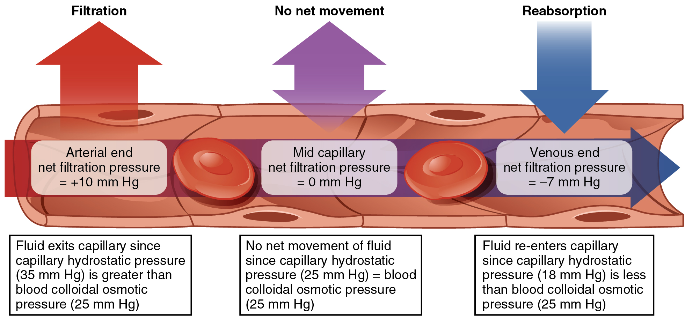
Since overall CHP is higher than BCOP, it is inevitable that more net fluid will exit the capillary through filtration at the arterial end than enters through reabsorption at the venous end. Considering all capillaries over the course of a day, this can be quite a substantial amount of fluid: Approximately 24 liters per day are filtered, whereas 20.4 liters are reabsorbed. This excess fluid is picked up by capillaries of the lymphatic system. These extremely thin-walled vessels have copious numbers of valves that ensure unidirectional flow through ever-larger lymphatic vessels that eventually drain into the subclavian veins in the neck. An important function of the lymphatic system is to return the fluid (lymph) to the blood. Lymph may be thought of as recycledblood plasma. (Seek additional content for more detail on the lymphatic system.)
Watch this video to explore capillaries and how they function in the body. Capillaries are never more than 100 micrometers away. What is the main component of interstitial fluid?
📖 OpenStax Anatomy & Physiology 2e, Section 20.4. openstax.org · CC BY 4.0
- Discuss the mechanisms involved in the neural regulation of vascular homeostasis
- Describe the contribution of a variety of hormones to the renal regulation of blood pressure
- Identify the effects of exercise on vascular homeostasis
- Discuss how hypertension, hemorrhage, and circulatory shock affect vascular health
In order to maintain homeostasis in the cardiovascular system and provide adequate blood to the tissues, blood flow must be redirected continually to the tissues as they become more active. In a very real sense, the cardiovascular system engages in resource allocation, because there is not enough blood flow to distribute blood equally to all tissues simultaneously. For example, when an individual is exercising, more blood will be directed to skeletal muscles, the heart, and the lungs. Following a meal, more blood is directed to the digestive system. Only the brain receives a more or less constant supply of blood whether you are active, resting, thinking, or engaged in any other activity.
Table \(\PageIndex{1}\): provides the distribution of systemic blood at rest and during exercise. Although most of the data appears logical, the values for the distribution of blood to the integument may seem surprising. During exercise, the body distributes more blood to the body surface where it can dissipate the excess heat generated by increased activity into the environment.
| Organ | Resting(mL/min) | Mild exercise(mL/min) | Maximal exercise(mL/min) |
|---|---|---|---|
| Skeletal muscle | 1200 | 4500 | 12,500 |
| Heart | 250 | 350 | 750 |
| Brain | 750 | 750 | 750 |
| Integument | 500 | 1500 | 1900 |
| Kidney | 1100 | 900 | 600 |
| Gastrointestinal | 1400 | 1100 | 600 |
| Others(i.e., liver, spleen) | 600 | 400 | 400 |
| Total | 5800 | 9500 | 17,500 |
Three homeostatic mechanisms ensure adequate blood flow, blood pressure, distribution, and ultimately perfusion: neural, endocrine, and autoregulatory mechanisms. They are summarized in Figure (\PageIndex{1}\).
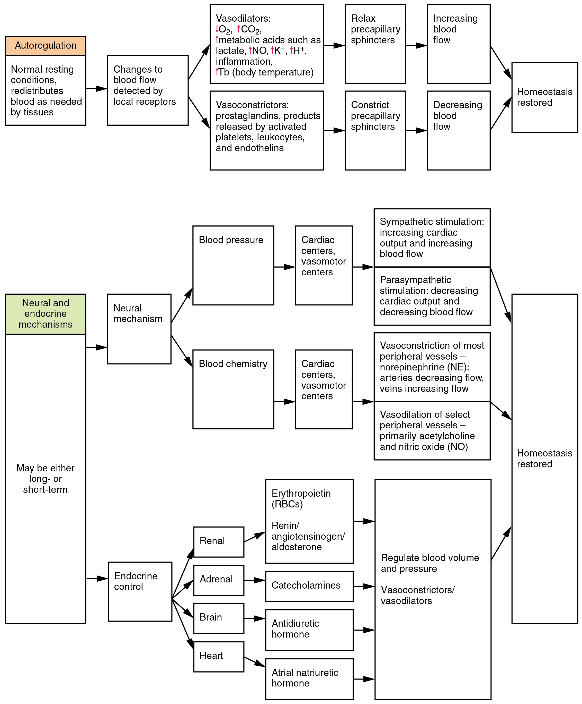
The nervous system plays a critical role in the regulation of vascular homeostasis. The primary regulatory sites include the cardiovascular centers in the brain that control both cardiac and vascular functions. In addition, more generalized neural responses from the limbic system and the autonomic nervous system are factors.
#### The Cardiovascular Centers in the Brain
Neurological regulation of blood pressure and flow depends on the cardiovascular centers located in the medulla oblongata. This cluster of neurons responds to changes in blood pressure as well as blood concentrations of oxygen, carbon dioxide, and hydrogen ions. The cardiovascular center contains three distinct paired components:
Although each center functions independently, they are not anatomically distinct.
There is also a small population of neurons that control vasodilation in the vessels of the brain and skeletal muscles by relaxing the smooth muscle fibers in the vessel tunics. Many of these are cholinergic neurons, that is, they release acetylcholine, which in turn stimulates the vessels’ endothelial cells to release nitric oxide (NO), which causes vasodilation. Others release norepinephrine that binds to β2receptors. A few neurons release NO directly as a neurotransmitter.
Recall that mild stimulation of the skeletal muscles maintains muscle tone. A similar phenomenon occurs with vascular tone in vessels. As noted earlier, arterioles are normally partially constricted: With maximal stimulation, their radius may be reduced to one-half of the resting state. Full dilation of most arterioles requires that this sympathetic stimulation be suppressed. When it is, an arteriole can expand by as much as 150 percent. Such a significant increase can dramatically affect resistance, pressure, and flow.
#### Baroreceptor Reflexes
Baroreceptors are specialized stretch receptors located within thin areas of blood vessels and heart chambers that respond to the degree of stretch caused by the presence of blood. They send impulses to the cardiovascular center to regulate blood pressure. Vascular baroreceptors are found primarily in sinuses (small cavities) within the aorta and carotid arteries: Theaortic sinusesare found in the walls of the ascending aorta just superior to the aortic valve, whereas thecarotid sinusesare in the base of the internal carotid arteries. There are also low-pressure baroreceptors located in the walls of the venae cavae and right atrium.
When blood pressure increases, the baroreceptors are stretched more tightly and initiate action potentials at a higher rate. At lower blood pressures, the degree of stretch is lower and the rate of firing is slower. When the cardiovascular center in the medulla oblongata receives this input, it triggers a reflex that maintains homeostasis (Figure \(\PageIndex{2}\)):
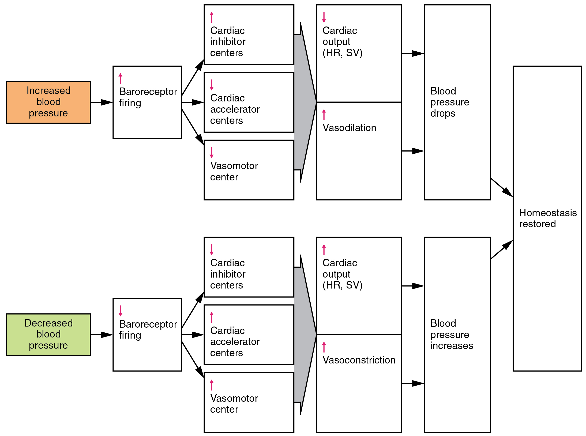
The baroreceptors in the venae cavae and right atrium monitor blood pressure as the blood returns to the heart from the systemic circulation. Normally, blood flow into the aorta is the same as blood flow back into the right atrium. If blood is returning to the right atrium more rapidly than it is being ejected from the left ventricle, the atrial receptors will stimulate the cardiovascular centers to increase sympathetic firing and increase cardiac output until homeostasis is achieved. The opposite is also true. This mechanism is referred to as theatrial reflex.
#### Chemoreceptor Reflexes
In addition to the baroreceptors are chemoreceptors that monitor levels of oxygen, carbon dioxide, and hydrogen ions (pH), and thereby contribute to vascular homeostasis. Chemoreceptors monitoring the blood are located in close proximity to the baroreceptors in the aortic and carotid sinuses. They signal the cardiovascular center as well as the respiratory centers in the medulla oblongata.
Since tissues consume oxygen and produce carbon dioxide and acids as waste products, when the body is more active, oxygen levels fall and carbon dioxide levels rise as cells undergo cellular respiration to meet the energy needs of activities. This causes more hydrogen ions to be produced, causing the blood pH to drop. When the body is resting, oxygen levels are higher, carbon dioxide levels are lower, more hydrogen is bound, and pH rises. (Seek additional content for more detail about pH.)
The chemoreceptors respond to increasing carbon dioxide and hydrogen ion levels (falling pH) by stimulating the cardioaccelerator and vasomotor centers, increasing cardiac output and constricting peripheral vessels. The cardioinhibitor centers are suppressed. With falling carbon dioxide and hydrogen ion levels (increasing pH), the cardioinhibitor centers are stimulated, and the cardioaccelerator and vasomotor centers are suppressed, decreasing cardiac output and causing peripheral vasodilation. In order to maintain adequate supplies of oxygen to the cells and remove waste products such as carbon dioxide, it is essential that the respiratory system respond to changing metabolic demands. In turn, the cardiovascular system will transport these gases to the lungs for exchange, again in accordance with metabolic demands. This interrelationship of cardiovascular and respiratory control cannot be overemphasized.
Other neural mechanisms can also have a significant impact on cardiovascular function. These include the limbic system that links physiological responses to psychological stimuli, as well as generalized sympathetic and parasympathetic stimulation.
Endocrine control over the cardiovascular system involves the catecholamines, epinephrine and norepinephrine, as well as several hormones that interact with the kidneys in the regulation of blood volume.
#### Epinephrine and Norepinephrine
The catecholamines epinephrine and norepinephrine are released by the adrenal medulla, and enhance and extend the body’s sympathetic or “fight-or-flight” response (see Figure 20.17). They increase heart rate and force of contraction, while temporarily constricting blood vessels to organs not essential for flight-or-fight responses and redirecting blood flow to the liver, muscles, and heart.
#### Antidiuretic Hormone
Antidiuretic hormone (ADH), also known as vasopressin, is secreted by the cells in the hypothalamus and transported via the hypothalamic-hypophyseal tracts to the posterior pituitary where it is stored until released upon nervous stimulation. The primary trigger prompting the hypothalamus to release ADH is increasing osmolarity of tissue fluid, usually in response to significant loss of blood volume. ADH signals its target cells in the kidneys to reabsorb more water, thus preventing the loss of additional fluid in the urine. This will increase overall fluid levels and help restore blood volume and pressure. In addition, ADH constricts peripheral vessels.
#### Renin-Angiotensin-Aldosterone Mechanism
The renin-angiotensin-aldosterone mechanism has a major effect upon the cardiovascular system (Figure \(\PageIndex{3}\)). Renin is an enzyme, although because of its importance in the renin-angiotensin-aldosterone pathway, some sources identify it as a hormone. Specialized cells in the kidneys , called juxtaglomerular (JG) cells, respond to decreased blood pressure by secreting renin into the blood. Renin converts the plasma protein angiotensinogen, which is produced by the liver, into its active form—angiotensin I. Angiotensin I circulates in the blood and is then converted into angiotensin II in the lungs. This reaction is catalyzed by the enzyme angiotensin-converting enzyme (ACE).
Angiotensin II is a powerful vasoconstrictor, greatly increasing blood pressure. It also stimulates the release of ADH and aldosterone, a hormone produced by the adrenal cortex. Aldosterone increases the reabsorption of sodium into the blood by the kidneys. Since water follows sodium, this increases the reabsorption of water. This in turn increases blood volume, raising blood pressure. Angiotensin II also stimulates the thirst center in the hypothalamus, so an individual will likely consume more fluids, again increasing blood volume and pressure.
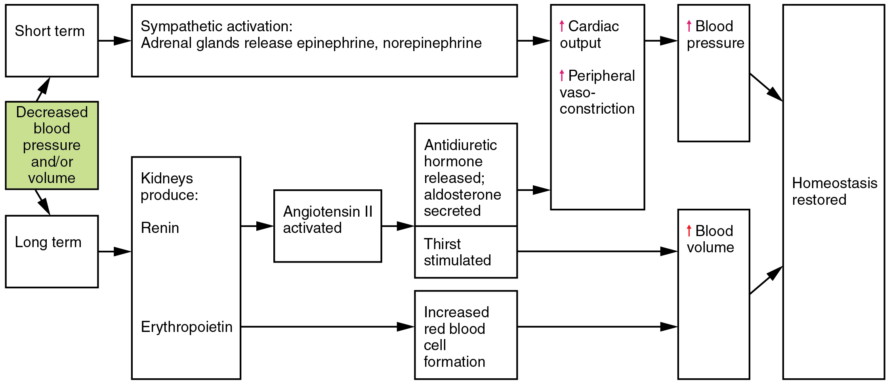
Erythropoietin (EPO) is released by the kidneys when blood flow and/or oxygen levels decrease. EPO stimulates the production of erythrocytes within the bone marrow. Erythrocytes are the major formed element of the blood and may contribute 40 percent or more to blood volume, a significant factor of viscosity, resistance, pressure, and flow. In addition, EPO is a vasoconstrictor. Overproduction of EPO or excessive intake of synthetic EPO, often to enhance athletic performance, will increase viscosity, resistance, and pressure, and decrease flow in addition to its contribution as a vasoconstrictor.
#### Atrial Natriuretic Hormone
Secreted by cells in the atria of the heart, atrial natriuretic hormone (ANH) (also known as atrial natriuretic peptide) is secreted when blood volume is high enough to cause extreme stretching of the cardiac cells. Cells in the ventricle produce a hormone with similar effects, called B-type natriuretic hormone. Natriuretic hormones are antagonists to angiotensin II. They promote loss of sodium and water from the kidneys, and suppress renin, aldosterone, and ADH production and release. All of these actions promote loss of fluid from the body, so blood volume and blood pressure drop.
As the name would suggest, autoregulation mechanisms require neither specialized nervous stimulation nor endocrine control. Rather, these are local, self-regulatory mechanisms that allow each region of tissue to adjust its blood flow—and thus its perfusion. These local mechanisms include chemical signals and myogenic controls.
#### Chemical Signals Involved in Autoregulation
Chemical signals work at the level of the precapillary sphincters to trigger either constriction or relaxation. As you know, opening a precapillary sphincter allows blood to flow into that particular capillary, whereas constricting a precapillary sphincter temporarily shuts off blood flow to that region. The factors involved in regulating the precapillary sphincters include the following:
Again, these factors alter tissue perfusion via their effects on the precapillary sphincter mechanism, which regulates blood flow to capillaries. Since the amount of blood is limited, not all capillaries can fill at once, so blood flow is allocated based upon the needs and metabolic state of the tissues as reflected in these parameters. Bear in mind, however, that dilation and constriction of the arterioles feeding the capillary beds is the primary control mechanism.
#### The Myogenic Response
Themyogenic responseis a reaction to the stretching of the smooth muscle in the walls of arterioles as changes in blood flow occur through the vessel. This may be viewed as a largely protective function against dramatic fluctuations in blood pressure and blood flow to maintain homeostasis. If perfusion of an organ is too low (ischemia), the tissue will experience low levels of oxygen (hypoxia). In contrast, excessive perfusion could damage the organ’s smaller and more fragile vessels. The myogenic response is a localized process that serves to stabilize blood flow in the capillary network that follows that arteriole.
When blood flow is low, the vessel’s smooth muscle will be only minimally stretched. In response, it relaxes, allowing the vessel to dilate and thereby increase the movement of blood into the tissue. When blood flow is too high, the smooth muscle will contract in response to the increased stretch, prompting vasoconstriction that reduces blood flow.
Figure \(\PageIndex{4}\) summarizes the effects of nervous, endocrine, and local controls on arterioles.
![This table summarizes mechanisms that regulate arteriole smooth muscle and veins. Neural controls are regulated by sympathetic stimulation and parasympathetic. Endocrine controls are regulated by epinephrine, norepinephrine, angiotensin II, ANH (peptide), and ADH. Other factors include decreasing levels of oxygen, decreasing pH, increasing levels of carbon dioxide, increasing levels of potassium ion, increasing levels of prostaglandins, increasing levels of andenosine, increasing levels of NO, increasing levels of lactic acid and other metabolites, increasing levels of endothelins, increasing levels of platelet secretions, increasing hyperhtermia, stretching of vascular wall (myogenic), and increasing levels of histamines from basophils and mast cells.](images/ch20/fig20-20-this-table-summarizes-mechanisms-that-re.jpg)
The heart is a muscle and, like any muscle, it responds dramatically to exercise. For a healthy young adult, cardiac output (heart rate × stroke volume) increases in the nonathlete from approximately 5.0 liters (5.25 quarts) per minute to a maximum of about 20 liters (21 quarts) per minute. Accompanying this will be an increase in blood pressure from about 120/80 to 185/75. However, well-trained aerobic athletes can increase these values substantially. For these individuals, cardiac output soars from approximately 5.3 liters (5.57 quarts) per minute resting to more than 30 liters (31.5 quarts) per minute during maximal exercise. Along with this increase in cardiac output, blood pressure increases from 120/80 at rest to 200/90 at maximum values.
In addition to improved cardiac function, exercise increases the size and mass of the heart. The average weight of the heart for the nonathlete is about 300 g, whereas in an athlete it will increase to 500 g. This increase in size generally makes the heart stronger and more efficient at pumping blood, increasing both stroke volume and cardiac output.
Tissue perfusion also increases as the body transitions from a resting state to light exercise and eventually to heavy exercise (see Figure (\PageIndex{4}\)). These changes result in selective vasodilation in the skeletal muscles, heart, lungs, liver, and integument. Simultaneously, vasoconstriction occurs in the vessels leading to the kidneys and most of the digestive and reproductive organs. The flow of blood to the brain remains largely unchanged whether at rest or exercising, since the vessels in the brain largely do not respond to regulatory stimuli, in most cases, because they lack the appropriate receptors.
As vasodilation occurs in selected vessels, resistance drops and more blood rushes into the organs they supply. This blood eventually returns to the venous system. Venous return is further enhanced by both the skeletal muscle and respiratory pumps. As blood returns to the heart more quickly, preload rises and the Frank-Starling principle tells us that contraction of the cardiac muscle in the atria and ventricles will be more forceful. Eventually, even the best-trained athletes will fatigue and must undergo a period of rest following exercise. Cardiac output and distribution of blood then return to normal.
Regular exercise promotes cardiovascular health in a variety of ways. Because an athlete’s heart is larger than a nonathlete’s, stroke volume increases, so the athletic heart can deliver the same amount of blood as the nonathletic heart but with a lower heart rate. This increased efficiency allows the athlete to exercise for longer periods of time before muscles fatigue and places less stress on the heart. Exercise also lowers overall cholesterol levels by removing from the circulation a complex form of cholesterol, triglycerides, and proteins known as low-density lipoproteins (LDLs), which are widely associated with increased risk of cardiovascular disease. Although there is no way to remove deposits of plaque from the walls of arteries other than specialized surgery, exercise does promote the health of vessels by decreasing the rate of plaque formation and reducing blood pressure, so the heart does not have to generate as much force to overcome resistance.
Generally as little as 30 minutes of noncontinuous exercise over the course of each day has beneficial effects and has been shown to lower the rate of heart attack by nearly 50 percent. While it is always advisable to follow a healthy diet, stop smoking, and lose weight, studies have clearly shown that fit, overweight people may actually be healthier overall than sedentary slender people. Thus, the benefits of moderate exercise are undeniable.
Any disorder that affects blood volume, vascular tone, or any other aspect of vascular functioning is likely to affect vascular homeostasis as well. That includes hypertension, hemorrhage, and shock.
#### Hypertension and Hypotension
New guidelines in 2017 from the American College of Cardiology and American Heart Association list normal blood pressure (BP) as less than 120/80 mm Hg and elevated BP as systolic P between 120–129 and diastolic P less than 80 mm Hg. Chronically elevated blood pressure is known clinically ashypertension. The new guidelines list hypertension that should be treated as 130/80 mm Hg. Tens of millions of Americans currently suffer from hypertension. Unfortunately, hypertension is typically a silent disorder; therefore, hypertensive patients may fail to recognize the seriousness of their condition and fail to follow their treatment plan. The result is often a heart attack or stroke. Hypertension may also lead to an aneurysm (ballooning of a blood vessel caused by a weakening of the wall), peripheral arterial disease (obstruction of vessels in peripheral regions of the body), chronic kidney disease, or heart failure.
Listen to this CDC podcast to learn about hypertension, often described as a “silent killer.” What steps can you take to reduce your risk of a heart attack or stroke?
Minor blood loss is managed by hemostasis and repair. Hemorrhage is a loss of blood that cannot be controlled by hemostatic mechanisms. Initially, the body responds to hemorrhage by initiating mechanisms aimed at increasing blood pressure and maintaining blood flow. Ultimately, however, blood volume will need to be restored, either through physiological processes or through medical intervention.
In response to blood loss, stimuli from the baroreceptors trigger the cardiovascular centers to stimulate sympathetic responses to increase cardiac output and vasoconstriction. This typically prompts the heart rate to increase to about 180–200 contractions per minute, restoring cardiac output to normal levels. Vasoconstriction of the arterioles increases vascular resistance, whereas constriction of the veins increases venous return to the heart. Both of these steps will help increase blood pressure. Sympathetic stimulation also triggers the release of epinephrine and norepinephrine, which enhance both cardiac output and vasoconstriction. If blood loss were less than 20 percent of total blood volume, these responses together would usually return blood pressure to normal and redirect the remaining blood to the tissues.
Additional endocrine involvement is necessary, however, to restore the lost blood volume. The angiotensin-renin-aldosterone mechanism stimulates the thirst center in the hypothalamus, which increases fluid consumption to help restore the lost blood. More importantly, it increases renal reabsorption of sodium and water, reducing water loss in urine output. The kidneys also increase the production of EPO, stimulating the formation of erythrocytes that not only deliver oxygen to the tissues but also increase overall blood volume. Figure \(\PageIndex{5}\) summarizes the responses to loss of blood volume.
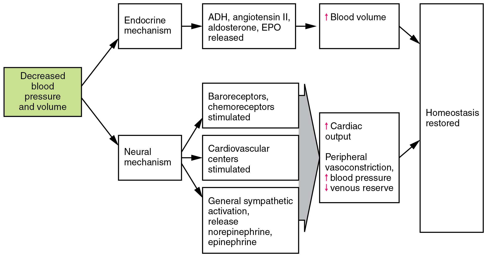
#### Circulatory Shock
The loss of too much blood may lead tocirculatory shock, a life-threatening condition in which the circulatory system is unable to maintain blood flow to adequately supply sufficient oxygen and other nutrients to the tissues to maintain cellular metabolism. It should not be confused with emotional or psychological shock. Typically, the patient in circulatory shock will demonstrate an increased heart rate but decreased blood pressure, but there are cases in which blood pressure will remain normal. Urine output will fall dramatically, and the patient may appear confused or lose consciousness. Urine output less than 1 mL/kg body weight/hour is cause for concern. Unfortunately, shock is an example of a positive-feedback loop that, if uncorrected, may lead to the death of the patient.
There are several recognized forms of shock:
📖 OpenStax Anatomy & Physiology 2e, Section 20.5. openstax.org · CC BY 4.0
- Identify the vessels through which blood travels within the pulmonary circuit, beginning from the right ventricle of the heart and ending at the left atrium
- Create a flow chart showing the major systemic arteries through which blood travels from the aorta and its major branches, to the most significant arteries feeding into the right and left upper and lower limbs
- Create a flow chart showing the major systemic veins through which blood travels from the feet to the right atrium of the heart
Virtually every cell, tissue, organ, and system in the body is impacted by the circulatory system. This includes the generalized and more specialized functions of transport of materials, capillary exchange, maintaining health by transporting white blood cells and various immunoglobulins (antibodies), hemostasis, regulation of body temperature, and helping to maintain acid-base balance. In addition to these shared functions, many systems enjoy a unique relationship with the circulatory system. Figure \(\PageIndex{1}\) summarizes these relationships.
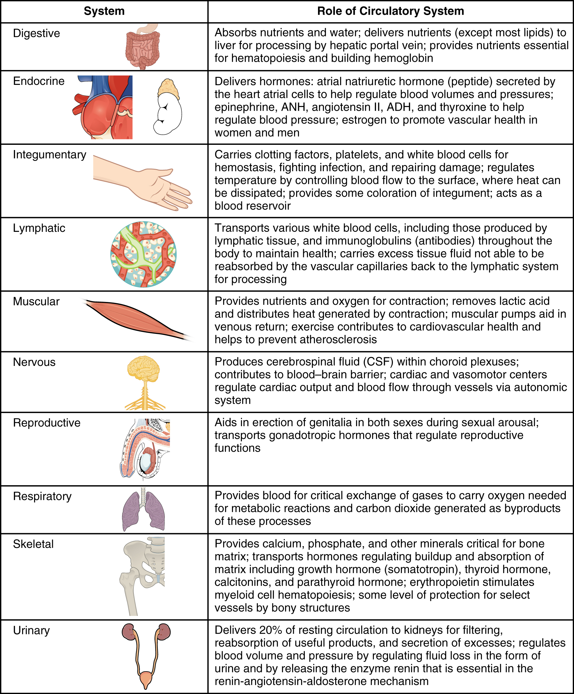
As you learn about the vessels of the systemic and pulmonary circuits, notice that many arteries and veins share the same names, parallel one another throughout the body, and are very similar on the right and left sides of the body. These pairs of vessels will be traced through only one side of the body. Where differences occur in branching patterns or when vessels are singular, this will be indicated. For example, you will find a pair of femoral arteries and a pair of femoral veins, with one vessel on each side of the body. In contrast, some vessels closer to the midline of the body, such as the aorta, are unique. Moreover, some superficial veins, such as the great saphenous vein in the femoral region, have no arterial counterpart. Another phenomenon that can make the study of vessels challenging is that names of vessels can change with location. Like a street that changes name as it passes through an intersection, an artery or vein can change names as it passes an anatomical landmark. For example, the left subclavian artery becomes the axillary artery as it passes through the body wall and into the axillary region, and then becomes the brachial artery as it flows from the axillary region into the upper arm (or brachium). You will also find examples of anastomoses where two blood vessels that previously branched reconnect. Anastomoses are especially common in veins, where they help maintain blood flow even when one vessel is blocked or narrowed, although there are some important ones in the arteries supplying the brain.
As you read about circular pathways, notice that there is an occasional, very large artery referred to as atrunk, a term indicating that the vessel gives rise to several smaller arteries. For example, the celiac trunk gives rise to the left gastric, common hepatic, and splenic arteries.
As you study this section, imagine you are on a “Voyage of Discovery” similar to Lewis and Clark’s expedition in 1804–1806, which followed rivers and streams through unfamiliar territory, seeking a water route from the Atlantic to the Pacific Ocean. You might envision being inside a miniature boat, exploring the various branches of the circulatory system. This simple approach has proven effective for many students in mastering these major circulatory patterns. Another approach that works well for many students is to create simple line drawings similar to the ones provided, labeling each of the major vessels. It is beyond the scope of this text to name every vessel in the body. However, we will attempt to discuss the major pathways for blood and acquaint you with the major named arteries and veins in the body. Also, please keep in mind that individual variations in circulation patterns are not uncommon.
Visit thissitefor a brief summary of the arteries.
Recall that blood returning from the systemic circuit enters the right atrium (Figure \(\PageIndex{2}\) ) via the superior and inferior venae cavae and the coronary sinus, which drains the blood supply of the heart muscle. These vessels will be described more fully later in this section. This blood is relatively low in oxygen and relatively high in carbon dioxide, since much of the oxygen has been extracted for use by the tissues and the waste gas carbon dioxide was picked up to be transported to the lungs for elimination. From the right atrium, blood moves into the right ventricle, which pumps it to the lungs for gas exchange. This system of vessels is referred to as thepulmonary circuit.
The single vessel exiting the right ventricle is thepulmonary trunk. At the base of the pulmonary trunk is the pulmonary semilunar valve, which prevents backflow of blood into the right ventricle during ventricular diastole. As the pulmonary trunk reaches the superior surface of the heart, it curves posteriorly and rapidly bifurcates (divides) into two branches, a left and a rightpulmonary artery. To prevent confusion between these vessels, it is important to refer to the vessel exiting the heart as the pulmonary trunk, rather than also calling it a pulmonary artery. The pulmonary arteries in turn branch many times within the lung, forming a series of smaller arteries and arterioles that eventually lead to the pulmonary capillaries. The pulmonary capillaries surround lung structures known as alveoli that are the sites of oxygen and carbon dioxide exchange.
Once gas exchange is completed, oxygenated blood flows from the pulmonary capillaries into a series of pulmonary venules that eventually lead to a series of largerpulmonary veins. Four pulmonary veins, two on the left and two on the right, return blood to the left atrium. At this point, the pulmonary circuit is complete. Table \(\PageIndex{1}\ defines the major arteries and veins of the pulmonary circuit discussed in the text.
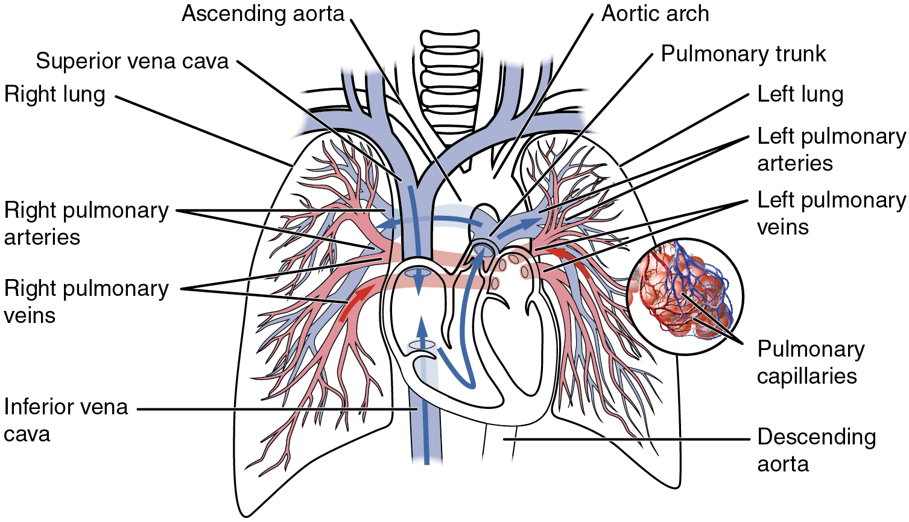
| Vessel | Description |
|---|---|
| Pulmonary trunk | Single large vessel exiting the right ventricle that divides to form the right and left pulmonary arteries |
| Pulmonary arteries | Left and right vessels that form from the pulmonary trunk and lead to smaller arterioles and eventually to the pulmonary capillaries |
| Pulmonary veins | Two sets of paired vessels—one pair on each side—that are formed from the small venules, leading away from the pulmonary capillaries to flow into the left atrium |
Blood relatively high in oxygen concentration is returned from the pulmonary circuit to the left atrium via the four pulmonary veins. From the left atrium, blood moves into the left ventricle, which pumps blood into the aorta. The aorta and its branches—the systemic arteries—send blood to virtually every organ of the body (Figure \(\PageIndex{3}\)).
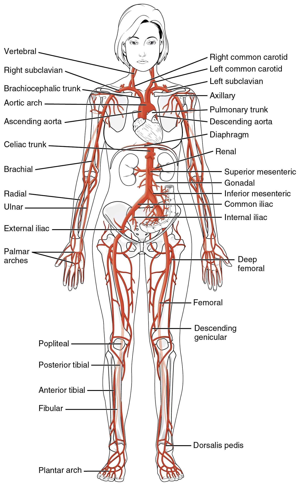
Theaortais the largest artery in the body (Figure \(\PageIndex{4}\)). It arises from the left ventricle and eventually descends to the abdominal region, where it bifurcates at the level of the fourth lumbar vertebra into the two common iliac arteries. The aorta consists of the ascending aorta, the aortic arch, and the descending aorta, which passes through the diaphragm and a landmark that divides into the superior thoracic and inferior abdominal components. Arteries originating from the aorta ultimately distribute blood to virtually all tissues of the body. At the base of the aorta is the aortic semilunar valve that prevents backflow of blood into the left ventricle while the heart is relaxing. After exiting the heart, theascending aortamoves in a superior direction for approximately 5 cm and ends at the sternal angle. Following this ascent, it reverses direction, forming a graceful arc to the left, called theaortic arch. The aortic arch descends toward the inferior portions of the body and ends at the level of the intervertebral disk between the fourth and fifth thoracic vertebrae. Beyond this point, thedescending aortacontinues close to the bodies of the vertebrae and passes through an opening in the diaphragm known as theaortic hiatus. Superior to the diaphragm, the aorta is called thethoracic aorta, and inferior to the diaphragm, it is called theabdominal aorta. The abdominal aorta terminates when it bifurcates into the two common iliac arteries at the level of the fourth lumbar vertebra. See Figure \(\PageIndex{4}\) for an illustration of the ascending aorta, the aortic arch, and the initial segment of the descending aorta plus major branches; Table \(\PageIndex{2}\) summarizes the structures of the aorta.
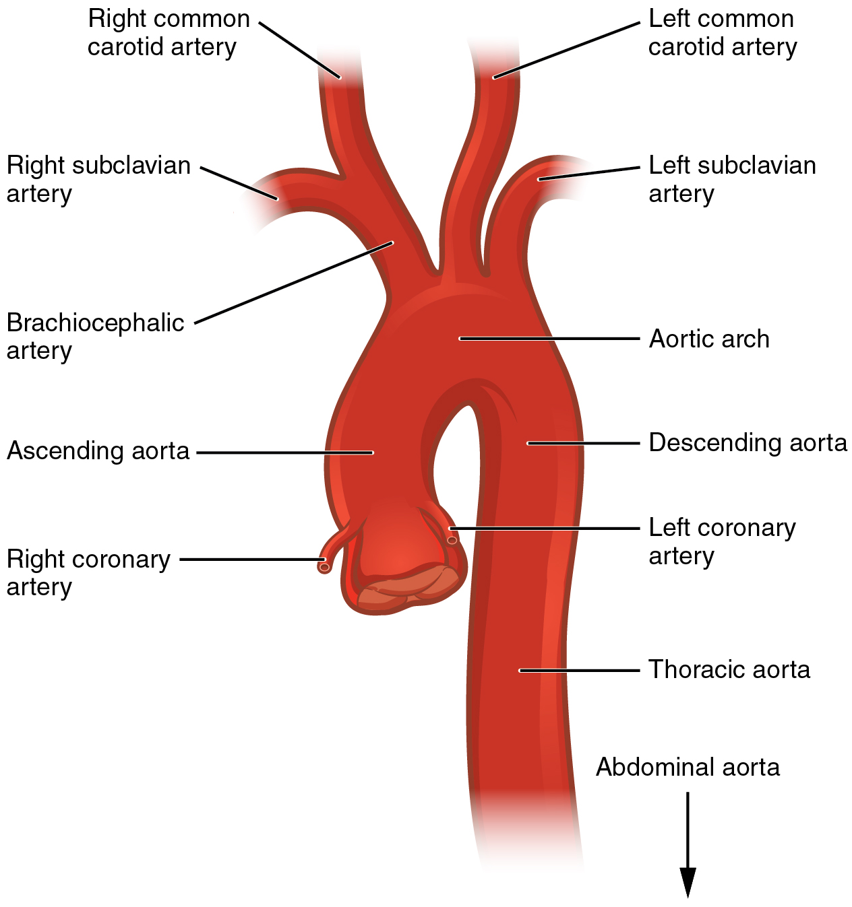
| Vessel | Description |
|---|---|
| Aorta | Largest artery in the body, originating from the left ventricle and descending to the abdominal region, where it bifurcates into the common iliac arteries at the level of the fourth lumbar vertebra; arteries originating from the aorta distribute blood to virtually all tissues of the body |
| Ascending aorta | Initial portion of the aorta, rising superiorly from the left ventricle for a distance of approximately 5 cm |
| Aortic arch | Graceful arc to the left that connects the ascending aorta to the descending aorta; ends at the intervertebral disk between the fourth and fifth thoracic vertebrae |
| Descending aorta | Portion of the aorta that continues inferiorly past the end of the aortic arch; subdivided into the thoracic aorta and the abdominal aorta |
| Thoracic aorta | Portion of the descending aorta superior to the aortic hiatus |
| Abdominal aorta | Portion of the aorta inferior to the aortic hiatus and superior to the common iliac arteries |
#### Coronary Circulation
The first vessels that branch from the ascending aorta are the paired coronary arteries (see Figure \(\PageIndex{4}\)), which arise from two of the three sinuses in the ascending aorta just superior to the aortic semilunar valve. These sinuses contain the aortic baroreceptors and chemoreceptors critical to maintain cardiac function. The left coronary artery arises from the left posterior aortic sinus. The right coronary artery arises from the anterior aortic sinus. Normally, the right posterior aortic sinus does not give rise to a vessel.
The coronary arteries encircle the heart, forming a ring-like structure that divides into the next level of branches that supplies blood to the heart tissues. (Seek additional content for more detail on cardiac circulation.)
#### Aortic Arch Branches
There are three major branches of the aortic arch: the brachiocephalic artery, the left common carotid artery, and the left subclavian (literally “under the clavicle”) artery. As you would expect based upon proximity to the heart, each of these vessels is classified as an elastic artery.
The brachiocephalic artery is located only on the right side of the body; there is no corresponding artery on the left. The brachiocephalic artery branches into the right subclavian artery and the right common carotid artery. The left subclavian and left common carotid arteries arise independently from the aortic arch but otherwise follow a similar pattern and distribution to the corresponding arteries on the right side (see Figure \(\PageIndex{2}\)).
Eachsubclavian arterysupplies blood to the arms, chest, shoulders, back, and central nervous system. It then gives rise to three major branches: the internal thoracic artery, the vertebral artery, and the thyrocervical artery. Theinternal thoracic artery, or mammary artery, supplies blood to the thymus, the pericardium of the heart, and the anterior chest wall. Thevertebral arterypasses through the vertebral foramen in the cervical vertebrae and then through the foramen magnum into the cranial cavity to supply blood to the brain and spinal cord. The paired vertebral arteries join together to form the large basilar artery at the base of the medulla oblongata. This is an example of an anastomosis. The subclavian artery also gives rise to thethyrocervical arterythat provides blood to the thyroid, the cervical region of the neck, and the upper back and shoulder.
Thecommon carotid arterydivides into internal and external carotid arteries. The right common carotid artery arises from the brachiocephalic artery and the left common carotid artery arises directly from the aortic arch. Theexternal carotid arterysupplies blood to numerous structures within the face, lower jaw, neck, esophagus, and larynx. These branches include the lingual, facial, occipital, maxillary, and superficial temporal arteries. Theinternal carotid arteryinitially forms an expansion known as the carotid sinus, containing the carotid baroreceptors and chemoreceptors. Like their counterparts in the aortic sinuses, the information provided by these receptors is critical to maintaining cardiovascular homeostasis (see Figure \(\PageIndex{2}\)).
The internal carotid arteries along with the vertebral arteries are the two primary suppliers of blood to the human brain. Given the central role and vital importance of the brain to life, it is critical that blood supply to this organ remains uninterrupted. Recall that blood flow to the brain is remarkably constant, with approximately 20 percent of blood flow directed to this organ at any given time. When blood flow is interrupted, even for just a few seconds, atransient ischemic attack (TIA), or mini-stroke, may occur, resulting in loss of consciousness or temporary loss of neurological function. In some cases, the damage may be permanent. Loss of blood flow for longer periods, typically between 3 and 4 minutes, will likely produce irreversible brain damage or a stroke, also called acerebrovascular accident (CVA). The locations of the arteries in the brain not only provide blood flow to the brain tissue but also prevent interruption in the flow of blood. Both the carotid and vertebral arteries branch once they enter the cranial cavity, and some of these branches form a structure known as thearterial circle(orcircle of Willis), an anastomosis that is remarkably like a traffic circle that sends off branches (in this case, arterial branches to the brain). As a rule, branches to the anterior portion of the cerebrum are normally fed by the internal carotid arteries; the remainder of the brain receives blood flow from branches associated with the vertebral arteries.
The internal carotid artery continues through the carotid canal of the temporal bone and enters the base of the brain through the carotid foramen where it gives rise to several branches (Figure \(\PageIndex{5}\) and Figure \(\PageIndex{6}\)). One of these branches is theanterior cerebral arterythat supplies blood to the frontal lobe of the cerebrum. Another branch, themiddle cerebral artery, supplies blood to the temporal and parietal lobes, which are the most common sites of CVAs. Theophthalmic artery, the third major branch, provides blood to the eyes.
The right and left anterior cerebral arteries join together to form an anastomosis called theanterior communicating artery. The initial segments of the anterior cerebral arteries and the anterior communicating artery form the anterior portion of the arterial circle. The posterior portion of the arterial circle is formed by a left and a rightposterior communicating arterythat branches from theposterior cerebral artery, which arises from the basilar artery. It provides blood to the posterior portion of the cerebrum and brain stem. Thebasilar arteryis an anastomosis that begins at the junction of the two vertebral arteries and sends branches to the cerebellum and brain stem. It flows into the posterior cerebral arteries. Table \(\PageIndex{3}\) summarizes the aortic arch branches, including the major branches supplying the brain.
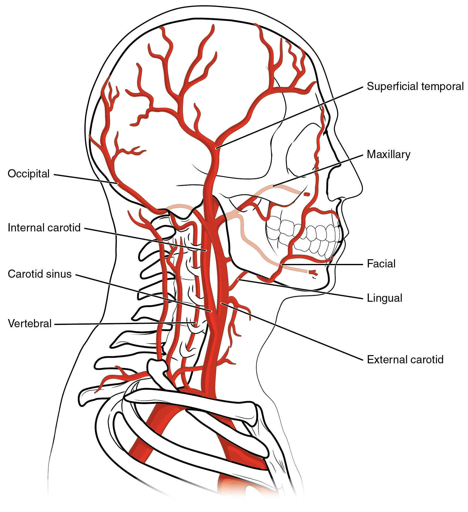
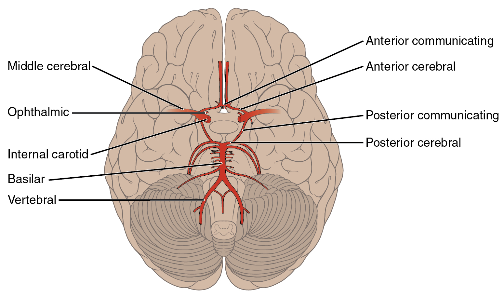
| Vessel | Description |
|---|---|
| Brachiocephalic artery | Single vessel located on the right side of the body; the first vessel branching from the aortic arch; gives rise to the right subclavian artery and the right common carotid artery; supplies blood to the head, neck, upper limb, and wall of the thoracic region |
| Subclavian artery | The right subclavian artery arises from the brachiocephalic artery while the left subclavian artery arises from the aortic arch; gives rise to the internal thoracic, vertebral, and thyrocervical arteries; supplies blood to the arms, chest, shoulders, back, and central nervous system |
| Internal thoracic artery | Also called the mammary artery; arises from the subclavian artery; supplies blood to the thymus, pericardium of the heart, and anterior chest wall |
| Vertebral artery | Arises from the subclavian artery and passes through the vertebral foramen through the foramen magnum to the brain; joins with the internal carotid artery to form the arterial circle; supplies blood to the brain and spinal cord |
| Thyrocervical artery | Arises from the subclavian artery; supplies blood to the thyroid, the cervical region, the upper back, and shoulder |
| Common carotid artery | The right common carotid artery arises from the brachiocephalic artery and the left common carotid artery arises from the aortic arch; each gives rise to the external and internal carotid arteries; supplies the respective sides of the head and neck |
| External carotid artery | Arises from the common carotid artery; supplies blood to numerous structures within the face, lower jaw, neck, esophagus, and larynx |
| Internal carotid artery | Arises from the common carotid artery and begins with the carotid sinus; goes through the carotid canal of the temporal bone to the base of the brain; combines with the branches of the vertebral artery, forming the arterial circle; supplies blood to the brain |
| Arterial circle or circle of Willis | An anastomosis located at the base of the brain that ensures continual blood supply; formed from the branches of the internal carotid and vertebral arteries; supplies blood to the brain |
| Anterior cerebral artery | Arises from the internal carotid artery; supplies blood to the frontal lobe of the cerebrum |
| Middle cerebral artery | Another branch of the internal carotid artery; supplies blood to the temporal and parietal lobes of the cerebrum |
| Ophthalmic artery | Branch of the internal carotid artery; supplies blood to the eyes |
| Anterior communicating artery | An anastomosis of the right and left internal carotid arteries; supplies blood to the brain |
| Posterior communicating artery | Branches of the posterior cerebral artery that form part of the posterior portion of the arterial circle; supplies blood to the brain |
| Posterior cerebral artery | Branch of the basilar artery that forms a portion of the posterior segment of the arterial circle of Willis; supplies blood to the posterior portion of the cerebrum and brain stem |
| Basilar artery | Formed from the fusion of the two vertebral arteries; sends branches to the cerebellum, brain stem, and the posterior cerebral arteries; the main blood supply to the brain stem |
#### Thoracic Aorta and Major Branches
The thoracic aorta begins at the level of vertebra T5 and continues through to the diaphragm at the level of T12, initially traveling within the mediastinum to the left of the vertebral column. As it passes through the thoracic region, the thoracic aorta gives rise to several branches, which are collectively referred to as visceral branches and parietal branches (Figure \(\PageIndex{7}\)). Those branches that supply blood primarily to visceral organs are known as thevisceral branchesand include the bronchial arteries, pericardial arteries, esophageal arteries, and the mediastinal arteries, each named after the tissues it supplies. Eachbronchial artery(typically two on the left and one on the right) supplies systemic blood to the lungs and visceral pleura, in addition to the blood pumped to the lungs for oxygenation via the pulmonary circuit. The bronchial arteries follow the same path as the respiratory branches, beginning with the bronchi and ending with the bronchioles. There is considerable, but not total, intermingling of the systemic and pulmonary blood at anastomoses in the smaller branches of the lungs. This may sound incongruous—that is, the mixing of systemic arterial blood high in oxygen with the pulmonary arterial blood lower in oxygen—but the systemic vessels also deliver nutrients to the lung tissue just as they do elsewhere in the body. The mixed blood drains into typical pulmonary veins, whereas the bronchial artery branches remain separate and drain into bronchial veins described later. Eachpericardial arterysupplies blood to the pericardium, theesophageal arteryprovides blood to the esophagus, and themediastinal arteryprovides blood to the mediastinum. The remaining thoracic aorta branches are collectively referred to asparietal branchesor somatic branches, and include the intercostal and superior phrenic arteries. Eachintercostal arteryprovides blood to the muscles of the thoracic cavity and vertebral column. Thesuperior phrenic arteryprovides blood to the superior surface of the diaphragm. Table \(\PageIndex{4}\) lists the arteries of the thoracic region.
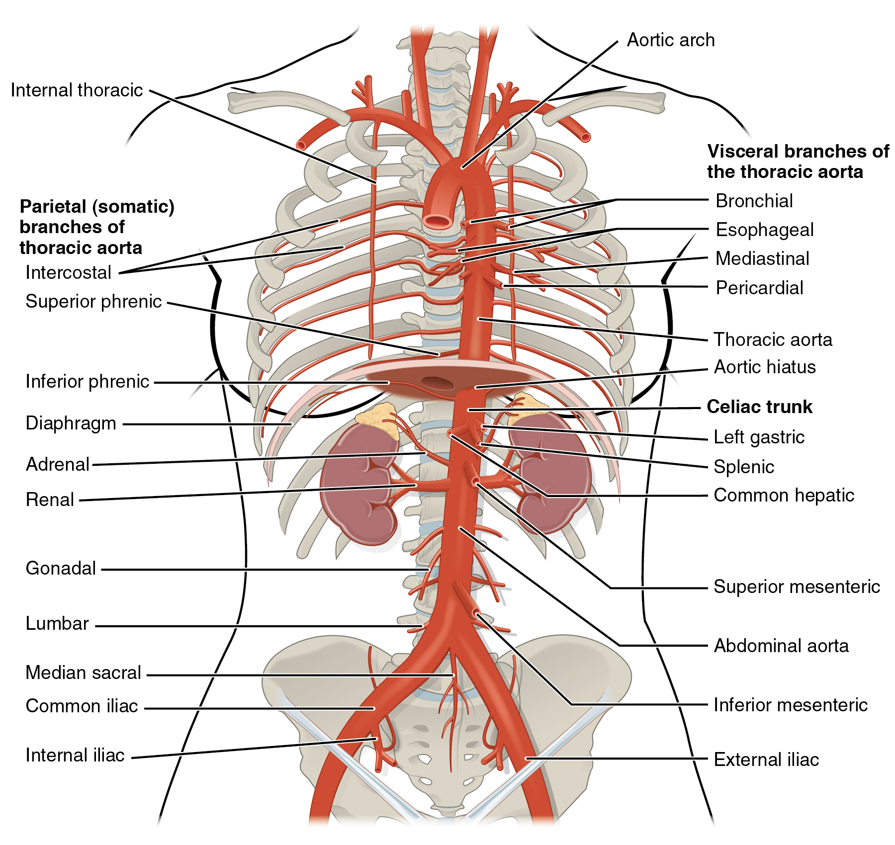
| Vessel | Description |
|---|---|
| Visceral branches | A group of arterial branches of the thoracic aorta; supplies blood to the viscera (i.e., organs) of the thorax |
| Bronchial artery | Systemic branch from the aorta that provides oxygenated blood to the lungs; this blood supply is in addition to the pulmonary circuit that brings blood for oxygenation |
| Pericardial artery | Branch of the thoracic aorta; supplies blood to the pericardium |
| Esophageal artery | Branch of the thoracic aorta; supplies blood to the esophagus |
| Mediastinal artery | Branch of the thoracic aorta; supplies blood to the mediastinum |
| Parietal branches | Also called somatic branches, a group of arterial branches of the thoracic aorta; include those that supply blood to the thoracic wall, vertebral column, and the superior surface of the diaphragm |
| Intercostal artery | Branch of the thoracic aorta; supplies blood to the muscles of the thoracic cavity and vertebral column |
| Superior phrenic artery | Branch of the thoracic aorta; supplies blood to the superior surface of the diaphragm |
#### Abdominal Aorta and Major Branches
After crossing through the diaphragm at the aortic hiatus, the thoracic aorta is called the abdominal aorta (see Figure \(\PageIndex{7}\)). This vessel remains to the left of the vertebral column and is embedded in adipose tissue behind the peritoneal cavity. It formally ends at approximately the level of vertebra L4, where it bifurcates to form the common iliac arteries. Before this division, the abdominal aorta gives rise to several important branches. A singleceliac trunk(artery) emerges and divides into theleft gastric arteryto supply blood to the stomach and esophagus, thesplenic arteryto supply blood to the spleen, and thecommon hepatic artery, which in turn gives rise to thehepatic artery properto supply blood to the liver, theright gastric arteryto supply blood to the stomach, thecystic arteryto supply blood to the gall bladder, and several branches, one to supply blood to the duodenum and another to supply blood to the pancreas. Two additional single vessels arise from the abdominal aorta. These are the superior and inferior mesenteric arteries. Thesuperior mesenteric arteryarises approximately 2.5 cm after the celiac trunk and branches into several major vessels that supply blood to the small intestine (duodenum, jejunum, and ileum), the pancreas, and a majority of the large intestine. Theinferior mesenteric arterysupplies blood to the distal segment of the large intestine, including the rectum. It arises approximately 5 cm superior to the common iliac arteries.
In addition to these single branches, the abdominal aorta gives rise to several significant paired arteries along the way. These include the inferior phrenic arteries, the adrenal arteries, the renal arteries, the gonadal arteries, and the lumbar arteries. Eachinferior phrenic arteryis a counterpart of a superior phrenic artery and supplies blood to the inferior surface of the diaphragm. Theadrenal arterysupplies blood to the adrenal (suprarenal) glands and arises near the superior mesenteric artery. Eachrenal arterybranches approximately 2.5 cm inferior to the superior mesenteric arteries and supplies a kidney. The right renal artery is longer than the left since the aorta lies to the left of the vertebral column and the vessel must travel a greater distance to reach its target. Renal arteries branch repeatedly to supply blood to the kidneys. Eachgonadal arterysupplies blood to the gonads, or reproductive organs, and is also described as either an ovarian artery or a testicular artery (internal spermatic), depending upon the sex of the individual. Anovarian arterysupplies blood to an ovary, uterine (Fallopian) tube, and the uterus, and is located within the suspensory ligament of the uterus. It is considerably shorter than atesticular artery, which ultimately travels outside the body cavity to the testes, forming one component of the spermatic cord. The gonadal arteries arise inferior to the renal arteries and are generally retroperitoneal. The ovarian artery continues to the uterus where it forms an anastomosis with the uterine artery that supplies blood to the uterus. Both the uterine arteries and vaginal arteries, which distribute blood to the vagina, are branches of the internal iliac artery. The four pairedlumbar arteriesare the counterparts of the intercostal arteries and supply blood to the lumbar region, the abdominal wall, and the spinal cord. In some instances, a fifth pair of lumbar arteries emerges from the median sacral artery.
The aorta divides at approximately the level of vertebra L4 into a left and a rightcommon iliac arterybut continues as a small vessel, themedian sacral artery, into the sacrum. The common iliac arteries provide blood to the pelvic region and ultimately to the lower limbs. They split into external and internal iliac arteries approximately at the level of the lumbar-sacral articulation. Eachinternal iliac arterysends branches to the urinary bladder, the walls of the pelvis, the external genitalia, and the medial portion of the femoral region. In females, they also provide blood to the uterus and vagina. The much largerexternal iliac arterysupplies blood to each of the lower limbs. Figure \(\PageIndex{8}\) shows the distribution of the major branches of the aorta into the thoracic and abdominal regions. Figure \(\PageIndex{9}\) shows the distribution of the major branches of the common iliac arteries. Table \(\PageIndex{5}\) summarizes the major branches of the abdominal aorta.
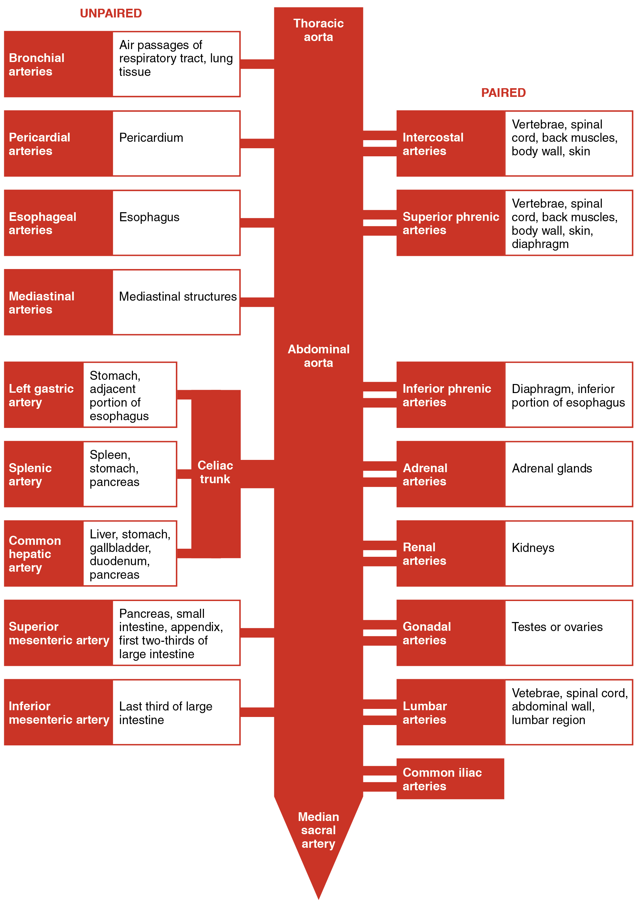
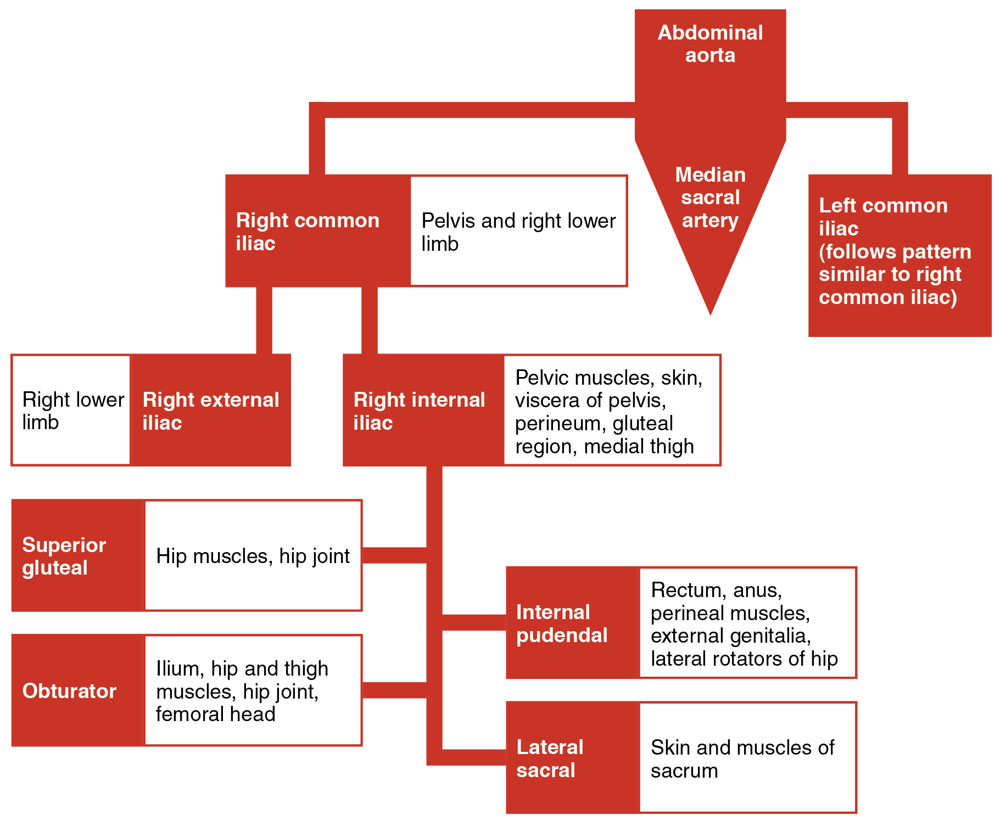
| Vessel | Description |
|---|---|
| Celiac trunk | Also called the celiac artery; a major branch of the abdominal aorta; gives rise to the left gastric artery, the splenic artery, and the common hepatic artery that forms the hepatic artery to the liver, the right gastric artery to the stomach, and the cystic artery to the gall bladder |
| Left gastric artery | Branch of the celiac trunk; supplies blood to the stomach |
| Splenic artery | Branch of the celiac trunk; supplies blood to the spleen |
| Common hepatic artery | Branch of the celiac trunk that forms the hepatic artery, the right gastric artery, and the cystic artery |
| Hepatic artery proper | Branch of the common hepatic artery; supplies systemic blood to the liver |
| Right gastric artery | Branch of the common hepatic artery; supplies blood to the stomach |
| Cystic artery | Branch of the common hepatic artery; supplies blood to the gall bladder |
| Superior mesenteric artery | Branch of the abdominal aorta; supplies blood to the small intestine (duodenum, jejunum, and ileum), the pancreas, and a majority of the large intestine |
| Inferior mesenteric artery | Branch of the abdominal aorta; supplies blood to the distal segment of the large intestine and rectum |
| Inferior phrenic arteries | Branches of the abdominal aorta; supply blood to the inferior surface of the diaphragm |
| Adrenal artery | Branch of the abdominal aorta; supplies blood to the adrenal (suprarenal) glands |
| Renal artery | Branch of the abdominal aorta; supplies each kidney |
| Gonadal artery | Branch of the abdominal aorta; supplies blood to the gonads or reproductive organs; also described as ovarian arteries or testicular arteries, depending upon the sex of the individual |
| Ovarian artery | Branch of the abdominal aorta; supplies blood to ovary, uterine (Fallopian) tube, and uterus |
| Testicular artery | Branch of the abdominal aorta; ultimately travels outside the body cavity to the testes and forms one component of the spermatic cord |
| Lumbar arteries | Branches of the abdominal aorta; supply blood to the lumbar region, the abdominal wall, and spinal cord |
| Common iliac artery | Branch of the aorta that leads to the internal and external iliac arteries |
| Median sacral artery | Continuation of the aorta into the sacrum |
| Internal iliac artery | Branch from the common iliac arteries; supplies blood to the urinary bladder, walls of the pelvis, external genitalia, and the medial portion of the femoral region; in females, also provides blood to the uterus and vagina |
| External iliac artery | Branch of the common iliac artery that leaves the body cavity and becomes a femoral artery; supplies blood to the lower limbs |
As the subclavian artery exits the thorax into the axillary region, it is renamed theaxillary artery. Although it does branch and supply blood to the region near the head of the humerus (via the humeral circumflex arteries), the majority of the vessel continues into the upper arm, or brachium, and becomes the brachial artery (Figure \(\PageIndex{10}\)). Thebrachial arterysupplies blood to much of the brachial region and divides at the elbow into several smaller branches, including the deep brachial arteries, which provide blood to the posterior surface of the arm, and the ulnar collateral arteries, which supply blood to the region of the elbow. As the brachial artery approaches the coronoid fossa, it bifurcates into the radial and ulnar arteries, which continue into the forearm, or antebrachium. Theradial arteryandulnar arteryparallel their namesake bones, giving off smaller branches until they reach the wrist, or carpal region. At this level, they fuse to form the superficial and deeppalmar archesthat supply blood to the hand, as well as thedigital arteriesthat supply blood to the digits. Figure \(\PageIndex{11}\) shows the distribution of systemic arteries from the heart into the upper limb. Table \(\PageIndex{6}\) summarizes the arteries serving the upper limbs.
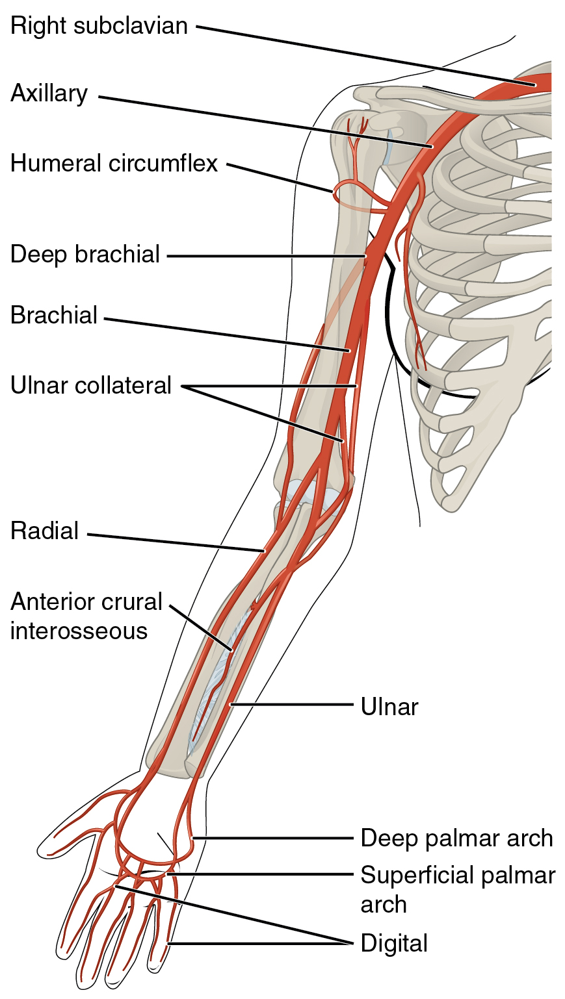
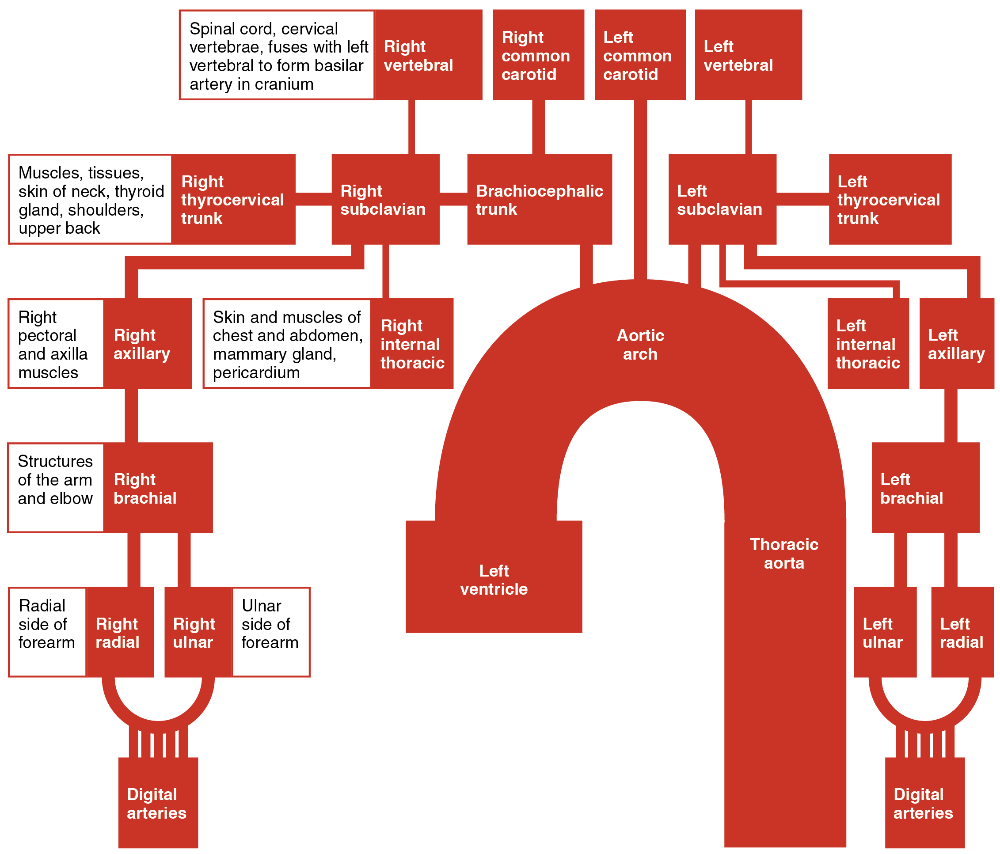
| Vessel | Description |
|---|---|
| Axillary artery | Continuation of the subclavian artery as it penetrates the body wall and enters the axillary region; supplies blood to the region near the head of the humerus (humeral circumflex arteries); the majority of the vessel continues into the brachium and becomes the brachial artery |
| Brachial artery | Continuation of the axillary artery in the brachium; supplies blood to much of the brachial region; gives off several smaller branches that provide blood to the posterior surface of the arm in the region of the elbow; bifurcates into the radial and ulnar arteries at the coronoid fossa |
| Radial artery | Formed at the bifurcation of the brachial artery; parallels the radius; gives off smaller branches until it reaches the carpal region where it fuses with the ulnar artery to form the superficial and deep palmar arches; supplies blood to the lower arm and carpal region |
| Ulnar artery | Formed at the bifurcation of the brachial artery; parallels the ulna; gives off smaller branches until it reaches the carpal region where it fuses with the radial artery to form the superficial and deep palmar arches; supplies blood to the lower arm and carpal region |
| Palmar arches (superficial and deep) | Formed from anastomosis of the radial and ulnar arteries; supply blood to the hand and digital arteries |
| Digital arteries | Formed from the superficial and deep palmar arches; supply blood to the digits |
The external iliac artery exits the body cavity and enters the femoral region of the lower leg (Figure \(\PageIndex{12}\)). As it passes through the body wall, it is renamed thefemoral artery. It gives off several smaller branches as well as the lateraldeep femoral arterythat in turn gives rise to alateral circumflex artery. These arteries supply blood to the deep muscles of the thigh as well as ventral and lateral regions of the integument. The femoral artery also gives rise to thegenicular artery, which provides blood to the region of the knee. As the femoral artery passes posterior to the knee near the popliteal fossa, it is called the popliteal artery. Thepopliteal arterybranches into the anterior and posterior tibial arteries.
Theanterior tibial arteryis located between the tibia and fibula, and supplies blood to the muscles and integument of the anterior tibial region. Upon reaching the tarsal region, it becomes thedorsalis pedis artery, which branches repeatedly and provides blood to the tarsal and dorsal regions of the foot. Theposterior tibial arteryprovides blood to the muscles and integument on the posterior surface of the tibial region. The fibular or peroneal artery branches from the posterior tibial artery. It bifurcates and becomes themedial plantar arteryandlateral plantar artery, providing blood to the plantar surfaces. There is an anastomosis with the dorsalis pedis artery, and the medial and lateral plantar arteries form two arches called thedorsal arch(also called the arcuate arch) and theplantar arch, which provide blood to the remainder of the foot and toes. Figure \(\PageIndex{13}\) shows the distribution of the major systemic arteries in the lower limb. Table \(\PageIndex{7}\) summarizes the major systemic arteries discussed in the text.
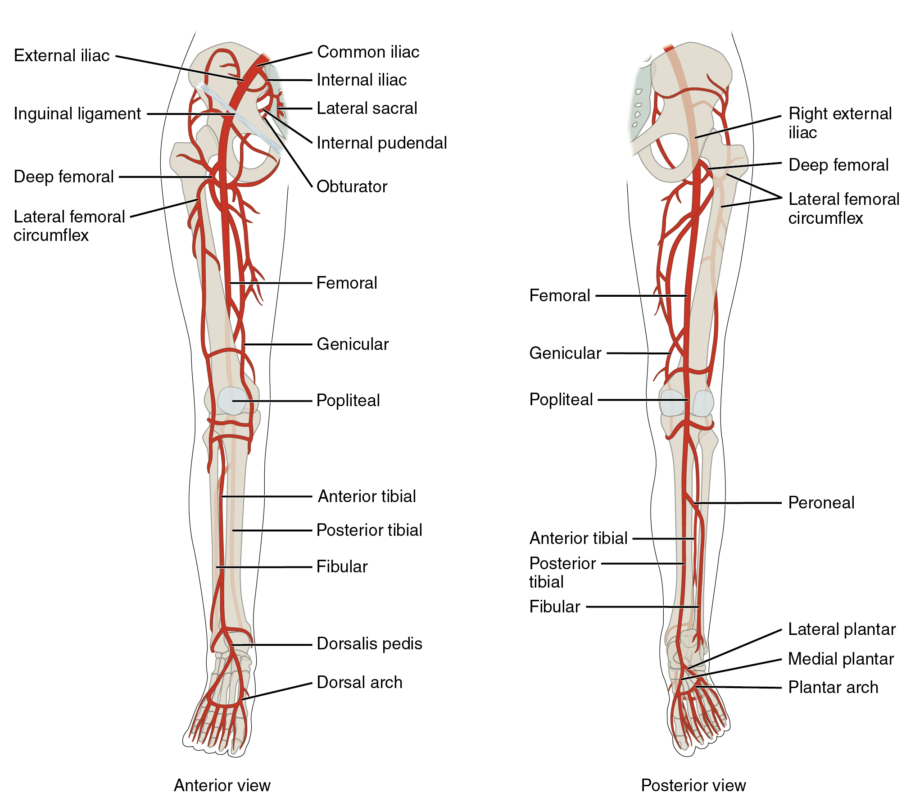
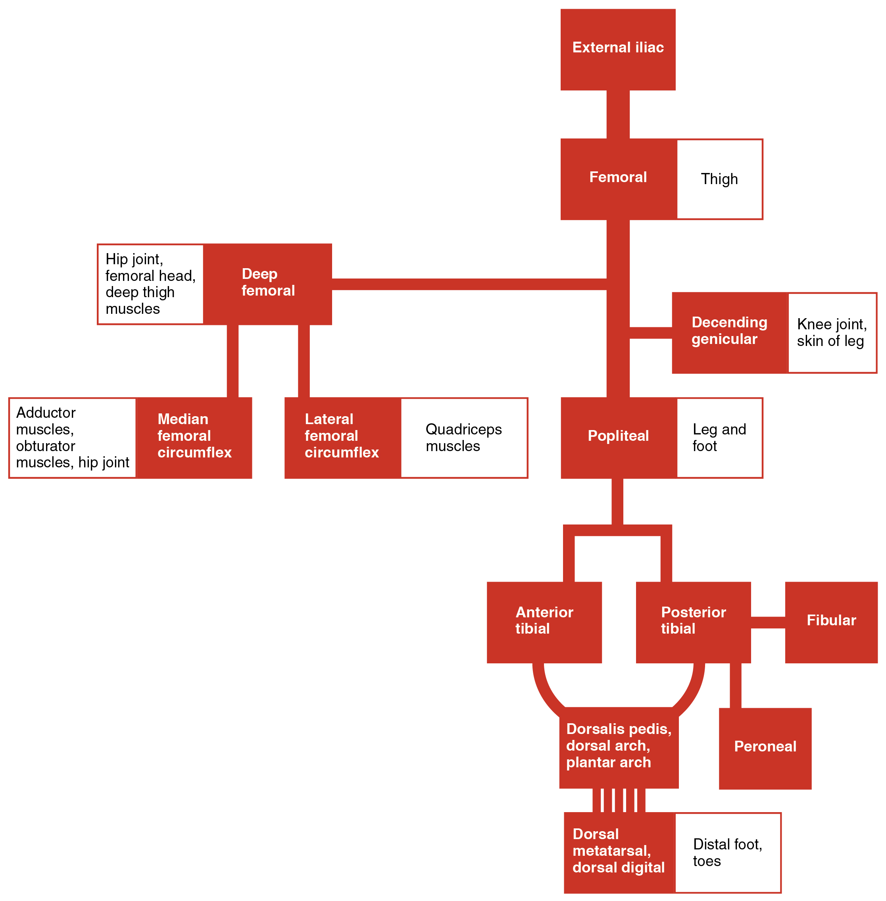
| Vessel | Description |
|---|---|
| Femoral artery | Continuation of the external iliac artery after it passes through the body cavity; divides into several smaller branches, the lateral deep femoral artery, and the genicular artery; becomes the popliteal artery as it passes posterior to the knee |
| Deep femoral artery | Branch of the femoral artery; gives rise to the lateral circumflex arteries |
| Lateral circumflex artery | Branch of the deep femoral artery; supplies blood to the deep muscles of the thigh and the ventral and lateral regions of the integument |
| Genicular artery | Branch of the femoral artery; supplies blood to the region of the knee |
| Popliteal artery | Continuation of the femoral artery posterior to the knee; branches into the anterior and posterior tibial arteries |
| Anterior tibial artery | Branches from the popliteal artery; supplies blood to the anterior tibial region; becomes the dorsalis pedis artery |
| Dorsalis pedis artery | Forms from the anterior tibial artery; branches repeatedly to supply blood to the tarsal and dorsal regions of the foot |
| Posterior tibial artery | Branches from the popliteal artery and gives rise to the fibular or peroneal artery; supplies blood to the posterior tibial region |
| Medial plantar artery | Arises from the bifurcation of the posterior tibial arteries; supplies blood to the medial plantar surfaces of the foot |
| Lateral plantar artery | Arises from the bifurcation of the posterior tibial arteries; supplies blood to the lateral plantar surfaces of the foot |
| Dorsal or arcuate arch | Formed from the anastomosis of the dorsalis pedis artery and the medial and plantar arteries; branches supply the distal portions of the foot and digits |
| Plantar arch | Formed from the anastomosis of the dorsalis pedis artery and the medial and plantar arteries; branches supply the distal portions of the foot and digits |
Systemic veins return blood to the right atrium. Since the blood has already passed through the systemic capillaries, it will be relatively low in oxygen concentration. In many cases, there will be veins draining organs and regions of the body with the same name as the arteries that supplied these regions and the two often parallel one another. This is often described as a “complementary” pattern. However, there is a great deal more variability in the venous circulation than normally occurs in the arteries. For the sake of brevity and clarity, this text will discuss only the most commonly encountered patterns. However, keep this variation in mind when you move from the classroom to clinical practice.
In both the neck and limb regions, there are often both superficial and deeper levels of veins. The deeper veins generally correspond to the complementary arteries. The superficial veins do not normally have direct arterial counterparts, but in addition to returning blood, they also make contributions to the maintenance of body temperature. When the ambient temperature is warm, more blood is diverted to the superficial veins where heat can be more easily dissipated to the environment. In colder weather, there is more constriction of the superficial veins and blood is diverted deeper where the body can retain more of the heat.
The “Voyage of Discovery” analogy and stick drawings mentioned earlier remain valid techniques for the study of systemic veins, but veins present a more difficult challenge because there are numerous anastomoses and multiple branches. It is like following a river with many tributaries and channels, several of which interconnect. Tracing blood flow through arteries follows the current in the direction of blood flow, so that we move from the heart through the large arteries and into the smaller arteries to the capillaries. From the capillaries, we move into the smallest veins and follow the direction of blood flow into larger veins and back to the heart. Figure \(\PageIndex{14}\) outlines the path of the major systemic veins.
Visit thissitefor a brief online summary of the veins.
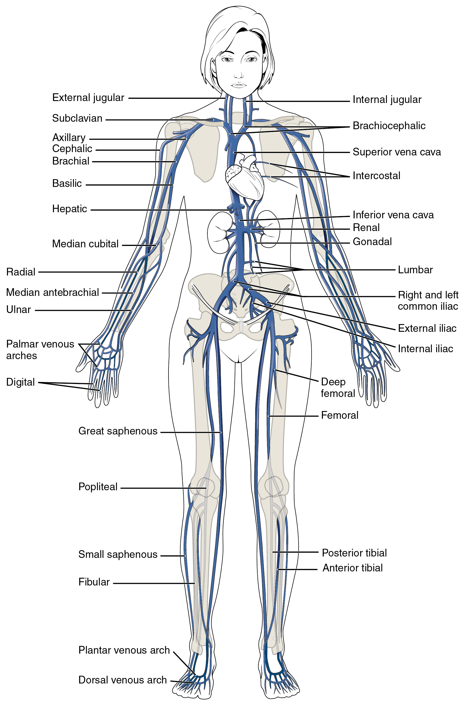
The right atrium receives all of the systemic venous return. Most of the blood flows into either the superior vena cava or inferior vena cava. If you draw an imaginary line at the level of the diaphragm, systemic venous circulation from above that line will generally flow into the superior vena cava; this includes blood from the head, neck, chest, shoulders, and upper limbs. The exception to this is that most venous blood flow from the coronary veins flows directly into the coronary sinus and from there directly into the right atrium. Beneath the diaphragm, systemic venous flow enters the inferior vena cava, that is, blood from the abdominal and pelvic regions and the lower limbs.
#### The Superior Vena Cava
Thesuperior vena cavadrains most of the body superior to the diaphragm (Figure \(\PageIndex{15}\)). On both the left and right sides, thesubclavian veinforms when the axillary vein passes through the body wall from the axillary region. It fuses with the external and internal jugular veins from the head and neck to form thebrachiocephalic vein. Eachvertebral veinalso flows into the brachiocephalic vein close to this fusion. These veins arise from the base of the brain and the cervical region of the spinal cord, and flow largely through the intervertebral foramina in the cervical vertebrae. They are the counterparts of the vertebral arteries. Eachinternal thoracic vein, also known as an internal mammary vein, drains the anterior surface of the chest wall and flows into the brachiocephalic vein.
The remainder of the blood supply from the thorax drains into the azygos vein. Eachintercostal veindrains muscles of the thoracic wall, eachesophageal veindelivers blood from the inferior portions of the esophagus, eachbronchial veindrains the systemic circulation from the lungs, and several smaller veins drain the mediastinal region. Bronchial veins carry approximately 13 percent of the blood that flows into the bronchial arteries; the remainder intermingles with the pulmonary circulation and returns to the heart via the pulmonary veins. These veins flow into theazygos vein, and with the smallerhemiazygos vein(hemi- = “half”) on the left of the vertebral column, drain blood from the thoracic region. The hemiazygos vein does not drain directly into the superior vena cava but enters the brachiocephalic vein via the superior intercostal vein.
The azygos vein passes through the diaphragm from the thoracic cavity on the right side of the vertebral column and begins in the lumbar region of the thoracic cavity. It flows into the superior vena cava at approximately the level of T2, making a significant contribution to the flow of blood. It combines with the two large left and right brachiocephalic veins to form the superior vena cava.
Table \(\PageIndex{8}\) summarizes the veins of the thoracic region that flow into the superior vena cava.
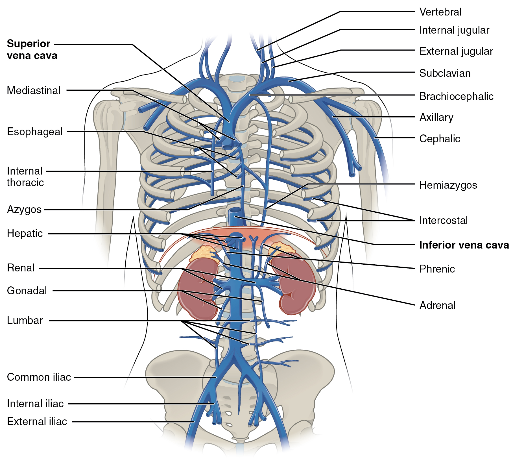
| Vessel | Description |
|---|---|
| Superior vena cava | Large systemic vein; drains blood from most areas superior to the diaphragm; empties into the right atrium |
| Subclavian vein | Located deep in the thoracic cavity; formed by the axillary vein as it enters the thoracic cavity from the axillary region; drains the axillary and smaller local veins near the scapular region and leads to the brachiocephalic vein |
| Brachiocephalic veins | Pair of veins that form from a fusion of the external and internal jugular veins and the subclavian vein; subclavian, external and internal jugulars, vertebral, and internal thoracic veins flow into it; drain the upper thoracic region and lead to the superior vena cava |
| Vertebral vein | Arises from the base of the brain and the cervical region of the spinal cord; passes through the intervertebral foramina in the cervical vertebrae; drains smaller veins from the cranium, spinal cord, and vertebrae, and leads to the brachiocephalic vein; counterpart of the vertebral artery |
| Internal thoracic veins | Also called internal mammary veins; drain the anterior surface of the chest wall and lead to the brachiocephalic vein |
| Intercostal vein | Drains the muscles of the thoracic wall and leads to the azygos vein |
| Esophageal vein | Drains the inferior portions of the esophagus and leads to the azygos vein |
| Bronchial vein | Drains the systemic circulation from the lungs and leads to the azygos vein |
| Azygos vein | Originates in the lumbar region and passes through the diaphragm into the thoracic cavity on the right side of the vertebral column; drains blood from the intercostal veins, esophageal veins, bronchial veins, and other veins draining the mediastinal region, and leads to the superior vena cava |
| Hemiazygos vein | Smaller vein complementary to the azygos vein; drains the esophageal veins from the esophagus and the left intercostal veins, and leads to the brachiocephalic vein via the superior intercostal vein |
#### Veins of the Head and Neck
Blood from the brain and the superficial facial vein flow into eachinternal jugular vein(Figure \(\PageIndex{16}\)). Blood from the more superficial portions of the head, scalp, and cranial regions, including thetemporal veinandmaxillary vein, flow into eachexternal jugular vein. Although the external and internal jugular veins are separate vessels, there are anastomoses between them close to the thoracic region. Blood from the external jugular vein empties into the subclavian vein. Table \(\PageIndex{9}\) summarizes the major veins of the head and neck.
| Vessel | Description |
|---|---|
| Internal jugular vein | Parallel to the common carotid artery, which is more or less its counterpart, and passes through the jugular foramen and canal; primarily drains blood from the brain, receives the superficial facial vein, and empties into the subclavian vein |
| Temporal vein | Drains blood from the temporal region and flows into the external jugular vein |
| Maxillary vein | Drains blood from the maxillary region and flows into the external jugular vein |
| External jugular vein | Drains blood from the more superficial portions of the head, scalp, and cranial regions, and leads to the subclavian vein |
#### Venous Drainage of the Brain
Circulation to the brain is both critical and complex (see Figure \(\PageIndex{16}\)). Many smaller veins of the brain stem and the superficial veins of the cerebrum lead to larger vessels referred to as intracranial sinuses. These include the superior and inferior sagittal sinuses, straight sinus, cavernous sinuses, left and right sinuses, the petrosal sinuses, and the occipital sinuses. Ultimately, sinuses will lead back to either the inferior jugular vein or vertebral vein.
Most of the veins on the superior surface of the cerebrum flow into the largest of the sinuses, thesuperior sagittal sinus. It is located midsagittally between the meningeal and periosteal layers of the dura mater within the falx cerebri and, at first glance in images or models, can be mistaken for the subarachnoid space. Most reabsorption of cerebrospinal fluid occurs via the chorionic villi (arachnoid granulations) into the superior sagittal sinus. Blood from most of the smaller vessels originating from the inferior cerebral veins flows into thegreat cerebral veinand into thestraight sinus. Other cerebral veins and those from the eye socket flow into thecavernous sinus, which flows into thepetrosal sinusand then into the internal jugular vein. Theoccipital sinus, sagittal sinus, and straight sinuses all flow into the left and right transverse sinuses near the lambdoid suture. Thetransverse sinusesin turn flow into thesigmoid sinusesthat pass through the jugular foramen and into the internal jugular vein. The internal jugular vein flows parallel to the common carotid artery and is more or less its counterpart. It empties into the brachiocephalic vein. The veins draining the cervical vertebrae and the posterior surface of the skull, including some blood from the occipital sinus, flow into the vertebral veins. These parallel the vertebral arteries and travel through the transverse foramina of the cervical vertebrae. The vertebral veins also flow into the brachiocephalic veins. Table \(\PageIndex{10}\) summarizes the major veins of the brain.
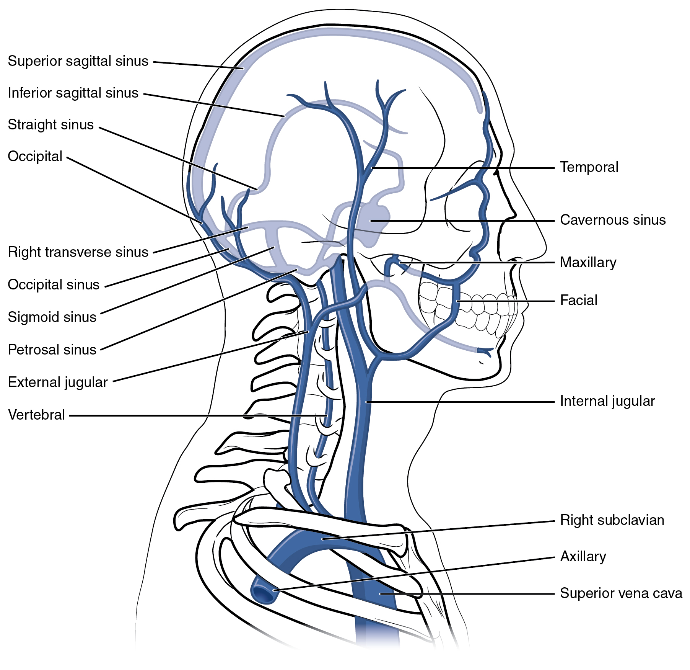
| Vessel | Description |
|---|---|
| Superior sagittal sinus | Enlarged vein located midsagittally between the meningeal and periosteal layers of the dura mater within the falx cerebri; receives most of the blood drained from the superior surface of the cerebrum and leads to the inferior jugular vein and the vertebral vein |
| Great cerebral vein | Receives most of the smaller vessels from the inferior cerebral veins and leads to the straight sinus |
| Straight sinus | Enlarged vein that drains blood from the brain; receives most of the blood from the great cerebral vein and leads to the left or right transverse sinus |
| Cavernous sinus | Enlarged vein that receives blood from most of the other cerebral veins and the eye socket, and leads to the petrosal sinus |
| Petrosal sinus | Enlarged vein that receives blood from the cavernous sinus and leads into the internal jugular veins |
| Occipital sinus | Enlarged vein that drains the occipital region near the falx cerebelli and leads to the left and right transverse sinuses, and also the vertebral veins |
| Transverse sinuses | Pair of enlarged veins near the lambdoid suture that drains the occipital, sagittal, and straight sinuses, and leads to the sigmoid sinuses |
| Sigmoid sinuses | Enlarged vein that receives blood from the transverse sinuses and leads through the jugular foramen to the internal jugular vein |
#### Veins Draining the Upper Limbs
Thedigital veinsin the fingers come together in the hand to form thepalmar venous arches(Figure \(\PageIndex{17}\)). From here, the veins come together to form the radial vein, the ulnar vein, and the median antebrachial vein. Theradial veinand theulnar veinparallel the bones of the forearm and join together at the antebrachium to form thebrachial vein, a deep vein that flows into the axillary vein in the brachium.
Themedian antebrachial veinparallels the ulnar vein, is more medial in location, and joins thebasilic veinin the forearm. As the basilic vein reaches the antecubital region, it gives off a branch called themedian cubital veinthat crosses at an angle to join the cephalic vein. The median cubital vein is the most common site for drawing venous blood in humans. The basilic vein continues through the arm medially and superficially to the axillary vein.
Thecephalic veinbegins in the antebrachium and drains blood from the superficial surface of the arm into the axillary vein. It is extremely superficial and easily seen along the surface of the biceps brachii muscle in individuals with good muscle tone and in those without excessive subcutaneous adipose tissue in the arms.
Thesubscapular veindrains blood from the subscapular region and joins the cephalic vein to form theaxillary vein. As it passes through the body wall and enters the thorax, the axillary vein becomes the subclavian vein.
Many of the larger veins of the thoracic and abdominal region and upper limb are further represented in the flow chart in Figure \(\PageIndex{18}\). Table \(\PageIndex{11}\) summarizes the veins of the upper limbs.
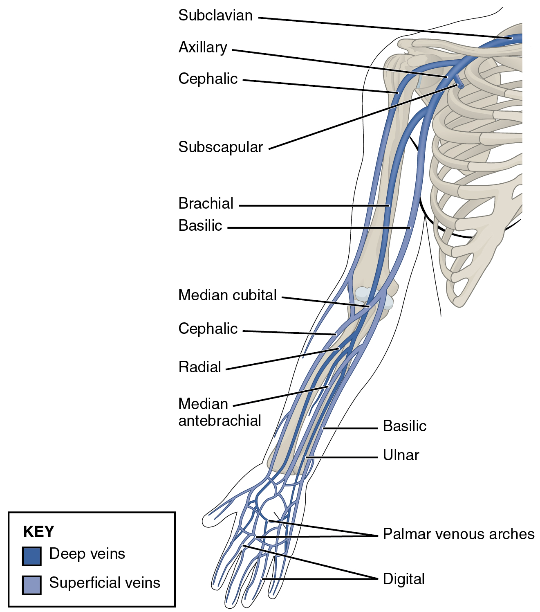
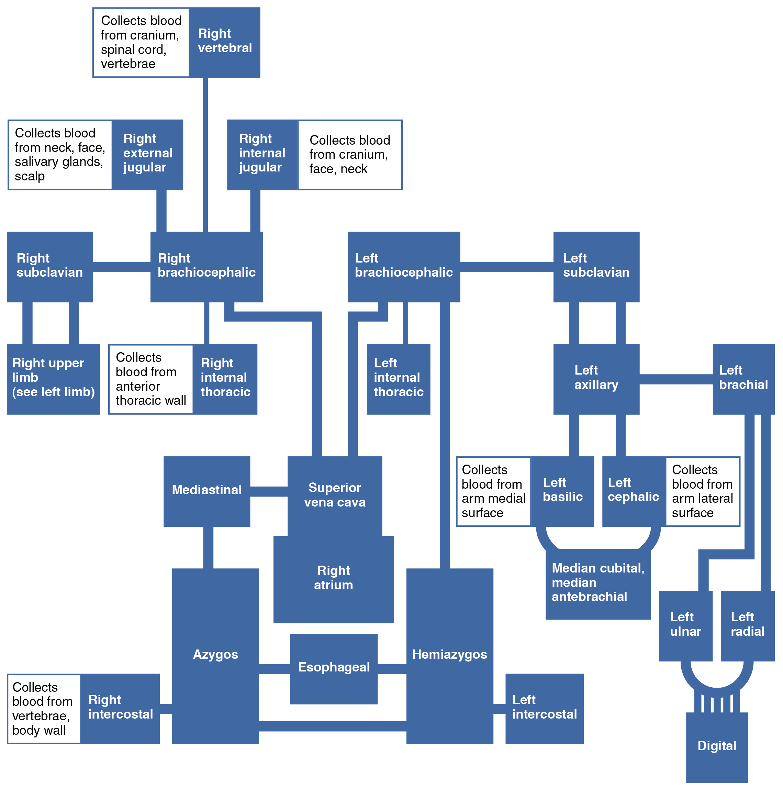
| Vessel | Description |
|---|---|
| Digital veins | Drain the digits and lead to the palmar arches of the hand and dorsal venous arch of the foot |
| Palmar venous arches | Drain the hand and digits, and lead to the radial vein, ulnar veins, and the median antebrachial vein |
| Radial vein | Vein that parallels the radius and radial artery; arises from the palmar venous arches and leads to the brachial vein |
| Ulnar vein | Vein that parallels the ulna and ulnar artery; arises from the palmar venous arches and leads to the brachial vein |
| Brachial vein | Deeper vein of the arm that forms from the radial and ulnar veins in the lower arm; leads to the axillary vein |
| Median antebrachial vein | Vein that parallels the ulnar vein but is more medial in location; intertwines with the palmar venous arches; leads to the basilic vein |
| Basilic vein | Superficial vein of the arm that arises from the median antebrachial vein, intersects with the median cubital vein, parallels the ulnar vein, and continues into the upper arm; along with the brachial vein, it leads to the axillary vein |
| Median cubital vein | Superficial vessel located in the antecubital region that links the cephalic vein to the basilic vein in the form of a v; a frequent site from which to draw blood |
| Cephalic vein | Superficial vessel in the upper arm; leads to the axillary vein |
| Subscapular vein | Drains blood from the subscapular region and leads to the axillary vein |
| Axillary vein | The major vein in the axillary region; drains the upper limb and becomes the subclavian vein |
#### The Inferior Vena Cava
Other than the small amount of blood drained by the azygos and hemiazygos veins, most of the blood inferior to the diaphragm drains into the inferior vena cava before it is returned to the heart (see Figure 20.36). Lying just beneath the parietal peritoneum in the abdominal cavity, theinferior vena cavaparallels the abdominal aorta, where it can receive blood from abdominal veins. The lumbar portions of the abdominal wall and spinal cord are drained by a series oflumbar veins, usually four on each side. The ascending lumbar veins drain into either the azygos vein on the right or the hemiazygos vein on the left, and return to the superior vena cava. The remaining lumbar veins drain directly into the inferior vena cava.
Blood supply from the kidneys flows into eachrenal vein, normally the largest veins entering the inferior vena cava. A number of other, smaller veins empty into the left renal vein. Eachadrenal veindrains the adrenal or suprarenal glands located immediately superior to the kidneys. The right adrenal vein enters the inferior vena cava directly, whereas the left adrenal vein enters the left renal vein.
From the male reproductive organs, eachtesticular veinflows from the scrotum, forming a portion of the spermatic cord. Eachovarian veindrains an ovary in females. Each of these veins is generically called agonadal vein. The right gonadal vein empties directly into the inferior vena cava, and the left gonadal vein empties into the left renal vein.
Each side of the diaphragm drains into aphrenic vein; the right phrenic vein empties directly into the inferior vena cava, whereas the left phrenic vein empties into the left renal vein. Blood supply from the liver drains into eachhepatic veinand directly into the inferior vena cava. Since the inferior vena cava lies primarily to the right of the vertebral column and aorta, the left renal vein is longer, as are the left phrenic, adrenal, and gonadal veins. The longer length of the left renal vein makes the left kidney the primary target of surgeons removing this organ for donation. Figure \(\PageIndex{19}\) provides a flow chart of the veins flowing into the inferior vena cava. Table \(\PageIndex{12}\) summarizes the major veins of the abdominal region.
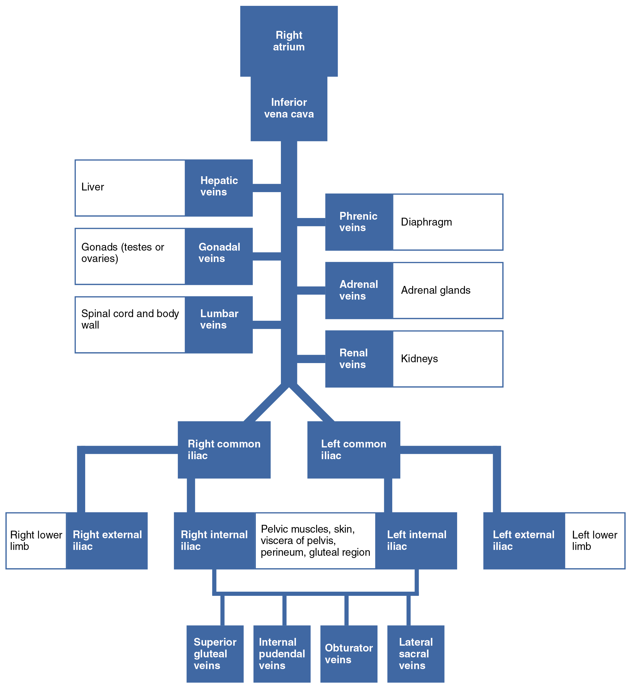
| Vessel | Description |
|---|---|
| Inferior vena cava | Large systemic vein that drains blood from areas largely inferior to the diaphragm; empties into the right atrium |
| Lumbar veins | Series of veins that drain the lumbar portion of the abdominal wall and spinal cord; the ascending lumbar veins drain into the azygos vein on the right or the hemiazygos vein on the left; the remaining lumbar veins drain directly into the inferior vena cava |
| Renal vein | Largest vein entering the inferior vena cava; drains the kidneys and flows into the inferior vena cava |
| Adrenal vein | Drains the adrenal or suprarenal; the right adrenal vein enters the inferior vena cava directly and the left adrenal vein enters the left renal vein |
| Testicular vein | Drains the testes and forms part of the spermatic cord; the right testicular vein empties directly into the inferior vena cava and the left testicular vein empties into the left renal vein |
| Ovarian vein | Drains the ovary; the right ovarian vein empties directly into the inferior vena cava and the left ovarian vein empties into the left renal vein |
| Gonadal vein | Generic term for a vein draining a reproductive organ; may be either an ovarian vein or a testicular vein, depending on the sex of the individual |
| Phrenic vein | Drains the diaphragm; the right phrenic vein flows into the inferior vena cava and the left phrenic vein empties into the left renal vein |
| Hepatic vein | Drains systemic blood from the liver and flows into the inferior vena cava |
#### Veins Draining the Lower Limbs
The superior surface of the foot drains into the digital veins, and the inferior surface drains into theplantar veins, which flow into a complex series of anastomoses in the feet and ankles, including thedorsal venous archand theplantar venous arch(Figure \(\PageIndex{20}\)). From the dorsal venous arch, blood supply drains into the anterior and posterior tibial veins. Theanterior tibial veindrains the area near the tibialis anterior muscle and combines with the posterior tibial vein and the fibular vein to form the popliteal vein. Theposterior tibial veindrains the posterior surface of the tibia and joins the popliteal vein. Thefibular veindrains the muscles and integument in proximity to the fibula and also joins the popliteal vein. Thesmall saphenous veinlocated on the lateral surface of the leg drains blood from the superficial regions of the lower leg and foot, and flows into to thepopliteal vein. As the popliteal vein passes behind the knee in the popliteal region, it becomes the femoral vein. It is palpable in patients without excessive adipose tissue.
Close to the body wall, the great saphenous vein, the deep femoral vein, and the femoral circumflex vein drain into the femoral vein. Thegreat saphenous veinis a prominent surface vessel located on the medial surface of the leg and thigh that collects blood from the superficial portions of these areas. Thedeep femoral vein, as the name suggests, drains blood from the deeper portions of the thigh. Thefemoral circumflex veinforms a loop around the femur just inferior to the trochanters and drains blood from the areas in proximity to the head and neck of the femur.
As thefemoral veinpenetrates the body wall from the femoral portion of the upper limb, it becomes theexternal iliac vein, a large vein that drains blood from the leg to the common iliac vein. The pelvic organs and integument drain into theinternal iliac vein, which forms from several smaller veins in the region, including the umbilical veins that run on either side of the bladder. The external and internal iliac veins combine near the inferior portion of the sacroiliac joint to form the common iliac vein. In addition to blood supply from the external and internal iliac veins, themiddle sacral veindrains the sacral region into thecommon iliac vein. Similar to the common iliac arteries, the common iliac veins come together at the level of L5 to form the inferior vena cava.
Figure \(\PageIndex{21}\) is a flow chart of veins flowing into the lower limb. Table \(\PageIndex{13}\) summarizes the major veins of the lower limbs.
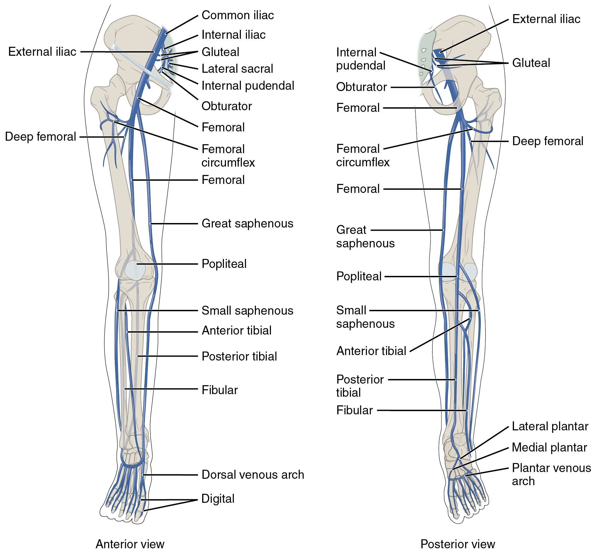
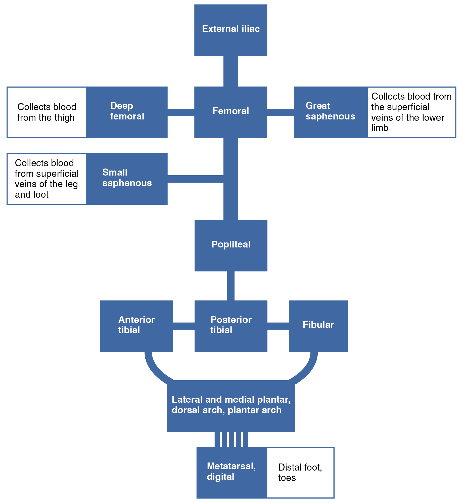
| Vessel | Description |
|---|---|
| Plantar veins | Drain the foot and flow into the plantar venous arch |
| Dorsal venous arch | Drains blood from digital veins and vessels on the superior surface of the foot |
| Plantar venous arch | Formed from the plantar veins; flows into the anterior and posterior tibial veins through anastomoses |
| Anterior tibial vein | Formed from the dorsal venous arch; drains the area near the tibialis anterior muscle and flows into the popliteal vein |
| Posterior tibial vein | Formed from the dorsal venous arch; drains the area near the posterior surface of the tibia and flows into the popliteal vein |
| Fibular vein | Drains the muscles and integument near the fibula and flows into the popliteal vein |
| Small saphenous vein | Located on the lateral surface of the leg; drains blood from the superficial regions of the lower leg and foot, and flows into the popliteal vein |
| Popliteal vein | Drains the region behind the knee and forms from the fusion of the fibular, anterior, and posterior tibial veins; flows into the femoral vein |
| Great saphenous vein | Prominent surface vessel located on the medial surface of the leg and thigh; drains the superficial portions of these areas and flows into the femoral vein |
| Deep femoral vein | Drains blood from the deeper portions of the thigh and flows into the femoral vein |
| Femoral circumflex vein | Forms a loop around the femur just inferior to the trochanters; drains blood from the areas around the head and neck of the femur; flows into the femoral vein |
| Femoral vein | Drains the upper leg; receives blood from the great saphenous vein, the deep femoral vein, and the femoral circumflex vein; becomes the external iliac vein when it crosses the body wall |
| External iliac vein | Formed when the femoral vein passes into the body cavity; drains the legs and flows into the common iliac vein |
| Internal iliac vein | Drains the pelvic organs and integument; formed from several smaller veins in the region; flows into the common iliac vein |
| Middle sacral vein | Drains the sacral region and flows into the left common iliac vein |
| Common iliac vein | Flows into the inferior vena cava at the level of L5; the left common iliac vein drains the sacral region; formed from the union of the external and internal iliac veins near the inferior portion of the sacroiliac joint |
The liver is a complex biochemical processing plant. It packages nutrients absorbed by the digestive system; produces plasma proteins, clotting factors, and bile; and disposes of worn-out cell components and waste products. Instead of entering the circulation directly, absorbed nutrients and certain wastes (for example, materials produced by the spleen) travel to the liver for processing. They do so via thehepatic portal system(Figure \(\PageIndex{22}\)). Portal systems begin and end in capillaries. In this case, the initial capillaries from the stomach, small intestine, large intestine, and spleen lead to the hepatic portal vein and end in specialized capillaries within the liver, the hepatic sinusoids. You saw the only other portal system with the hypothalamic-hypophyseal portal vessel in the endocrine chapter.
The hepatic portal system consists of the hepatic portal vein and the veins that drain into it. The hepatic portal vein itself is relatively short, beginning at the level of L2 with the confluence of the superior mesenteric and splenic veins. It also receives branches from the inferior mesenteric vein, plus the splenic veins and all their tributaries. The superior mesenteric vein receives blood from the small intestine, two-thirds of the large intestine, and the stomach. The inferior mesenteric vein drains the distal third of the large intestine, including the descending colon, the sigmoid colon, and the rectum. The splenic vein is formed from branches from the spleen, pancreas, and portions of the stomach, and the inferior mesenteric vein. After its formation, the hepatic portal vein also receives branches from the gastric veins of the stomach and cystic veins from the gall bladder. The hepatic portal vein delivers materials from these digestive and circulatory organs directly to the liver for processing.
Because of the hepatic portal system, the liver receives its blood supply from two different sources: from normal systemic circulation via the hepatic artery and from the hepatic portal vein. The liver processes the blood from the portal system to remove certain wastes and excess nutrients, which are stored for later use. This processed blood, as well as the systemic blood that came from the hepatic artery, exits the liver via the right, left, and middle hepatic veins, and flows into the inferior vena cava. Overall systemic blood composition remains relatively stable, since the liver is able to metabolize the absorbed digestive components.
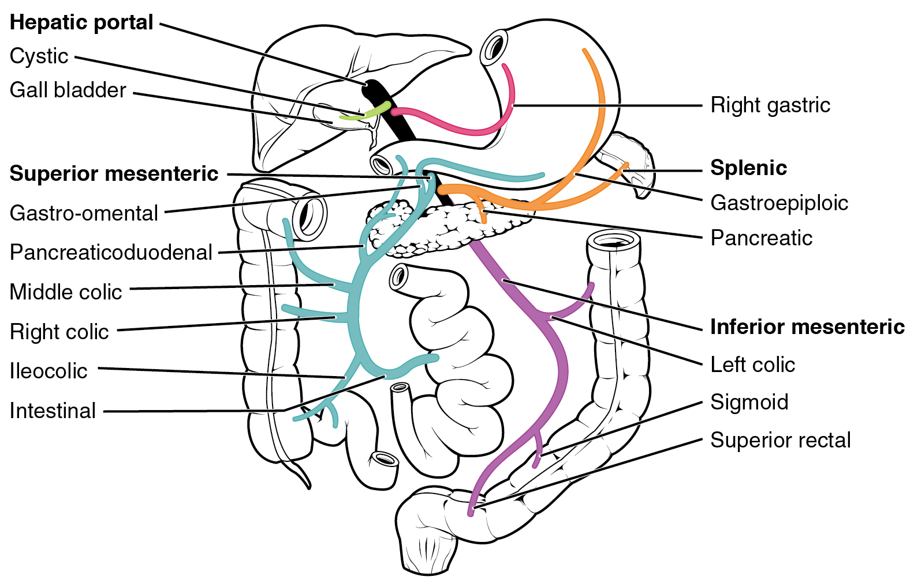
📖 OpenStax Anatomy & Physiology 2e, Section 20.6. openstax.org · CC BY 4.0
- Describe the development of blood vessels
- Describe the fetal circulation
In a developing embryo,the heart has developed enough by day 21 post-fertilization to begin beating. Circulation patterns are clearly established by the fourth week of embryonic life. It is critical to the survival of the developing human that the circulatory system forms early to supply the growing tissue with nutrients and gases, and to remove waste products. Blood cells and vessel production in structures outside the embryo proper called the yolk sac, chorion, and connecting stalk begin about 15 to 16 days following fertilization. Development of these circulatory elements within the embryo itself begins approximately 2 days later. You will learn more about the formation and function of these early structures when you study the chapter on development. During those first few weeks, blood vessels begin to form from the embryonic mesoderm. The precursor cells are known ashemangioblasts. These in turn differentiate intoangioblasts, which give rise to the blood vessels and pluripotent stem cells, which differentiate into the formed elements of blood. (Seek additional content for more detail on fetal development and circulation.) Together, these cells form masses known asblood islandsscattered throughout the embryonic disc. Spaces appear on the blood islands that develop into vessel lumens. The endothelial lining of the vessels arise from the angioblasts within these islands. Surrounding mesenchymal cells give rise to the smooth muscle and connective tissue layers of the vessels. While the vessels are developing, the pluripotent stem cells begin to form the blood.
Vascular tubesalso develop on the blood islands, and they eventually connect to one another as well as to the developing, tubular heart. Thus, the developmental pattern, rather than beginning from the formation of one central vessel and spreading outward, occurs in many regions simultaneously with vessels later joining together. Thisangiogenesis—the creation of new blood vessels from existing ones—continues as needed throughout life as we grow and develop.
Blood vessel development often follows the same pattern as nerve development and travels to the same target tissues and organs. This occurs because the many factors directing growth of nerves also stimulate blood vessels to follow a similar pattern. Whether a given vessel develops into an artery or a vein is dependent upon local concentrations of signaling proteins.
As the embryo grows within the mother’s uterus, its requirements for nutrients and gas exchange also grow. The placenta—a circulatory organ unique to pregnancy—develops jointly from the embryo and uterine wall structures to fill this need. Emerging from the placenta is theumbilical vein, which carries oxygen-rich blood from the pregnant person to the fetal inferior vena cava via the ductus venosus to the heart that pumps it into fetal circulation. Twoumbilical arteriescarry oxygen-depleted fetal blood, including wastes and carbon dioxide, to the placenta. Remnants of the umbilical arteries remain in the adult. (Seek additional content for more information on the role of the placenta in fetal circulation.)
There are three major shunts—alternate paths for blood flow—found in the circulatory system of the fetus. Two of these shunts divert blood from the pulmonary to the systemic circuit, whereas the third connects the umbilical vein to the inferior vena cava. The first two shunts are critical during fetal life, when the lungs are compressed, filled with amniotic fluid, and nonfunctional, and gas exchange is provided by the placenta. These shunts close shortly after birth, however, when the newborn begins to breathe. The third shunt persists a bit longer but becomes nonfunctional once the umbilical cord is severed. The three shunts are as follows (Figure \(\PageIndex{1}\)):
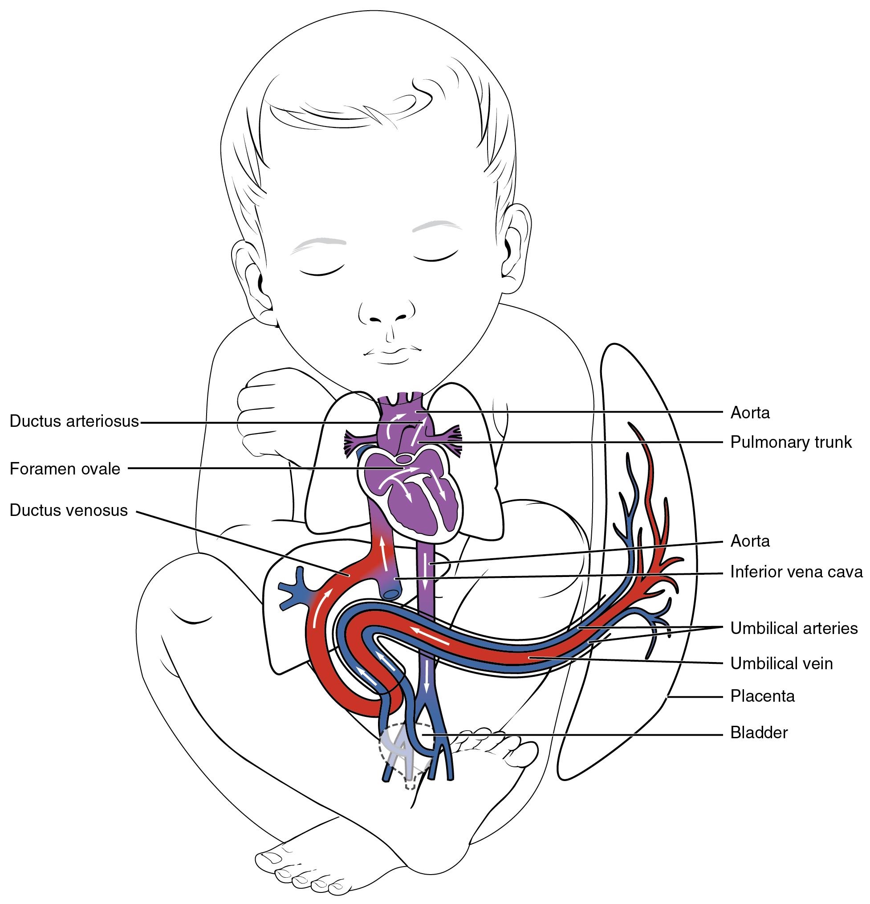
📖 OpenStax Anatomy & Physiology 2e, Section 20.7. openstax.org · CC BY 4.0
| Section | Title |
|---|---|
| 20.2 | 20.2: Structure and Function of Blood Vessels |
| 20.3 | 20.3: Blood Flow, Blood Pressure, and Resistance |
| 20.4 | 20.4: Capillary Exchange |
| 20.5 | 20.5: Homeostatic Regulation of the Vascular System |
| 20.6 | 20.6: Circulatory Pathways |
| 20.7 | 20.7: Development of Blood Vessels and Fetal Circulation |